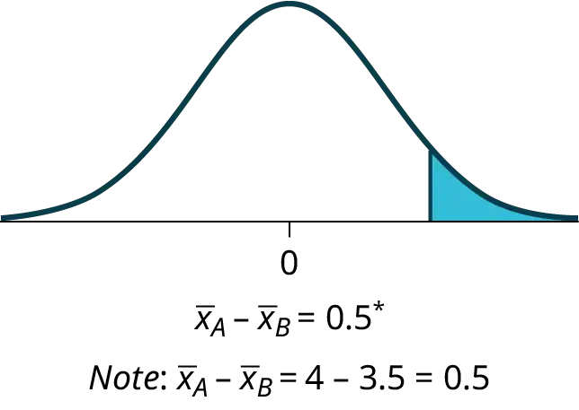
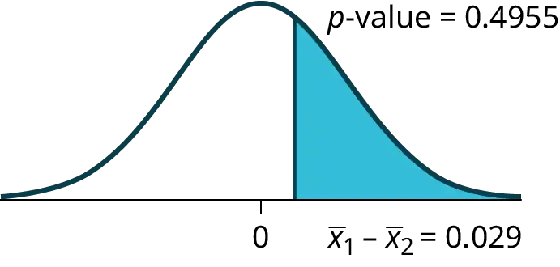
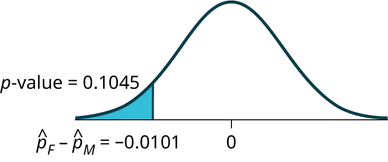
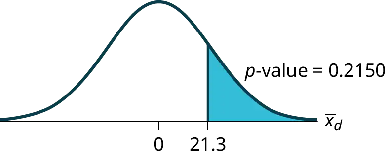
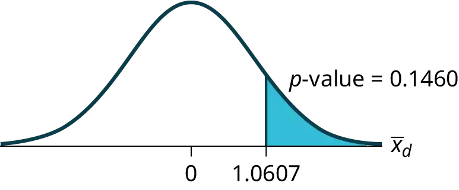

Chapter 10: Hypothesis Testing with Two Samples¶
Introduction¶
Chapter Outline: Chapter Objectives
By the end of this chapter, the student should be able to:
- Classify hypothesis tests by type.
- Conduct and interpret hypothesis tests for two population means, population standard deviations known.
- Conduct and interpret hypothesis tests for two population means, population standard deviations unknown.
- Conduct and interpret hypothesis tests for two population proportions.
- Conduct and interpret hypothesis tests for matched or paired samples.
Studies often compare two groups. For example, researchers are interested in the effect aspirin has in preventing heart attacks. Over the last few years, newspapers and magazines have reported various aspirin studies involving two groups. Typically, one group is given aspirin and the other group is given a placebo. Then, the heart attack rate is studied over several years.
There are other situations that deal with the comparison of two groups. For example, studies compare various diet and exercise programs. Politicians compare the proportion of individuals from different income brackets who might vote for them. Students are interested in whether SAT or GRE preparatory courses really help raise their scores.
You have learned to conduct hypothesis tests on single means and single proportions. You will expand upon that in this chapter. You will compare two means or two proportions to each other. The general procedure is still the same, just expanded.
To compare two means or two proportions, you work with two groups. The groups are classified either as independent or matched pairs. Independent groups consist of two samples that are independent, that is, sample values selected from one population are not related in any way to sample values selected from the other population. Matched pairs consist of two samples that are dependent. The parameter tested using matched pairs is the population mean. The parameters tested using independent groups are either population means or population proportions.
NOTE
This chapter relies on either a calculator or a computer to calculate the degrees of freedom, the test statistics, and p-values. TI-83+ and TI-84 instructions are included as well as the test statistic formulas. When using a TI-83+ or TI-84 calculator, we do not need to separate two population means, independent groups, or population variances unknown into large and small sample sizes. However, most statistical computer software has the ability to differentiate these tests.
This chapter deals with the following hypothesis tests:
Independent groups (samples are independent)
- Test of two population means.
- Test of two population proportions.
Matched or paired samples (samples are dependent)
- Test of the population mean of differences of measures for paired individuals or objects.
10.1 Two Population Means with Unknown Standard Deviations¶
-
The two independent samples are simple random samples from two distinct populations.
-
For the two distinct populations:
- if the sample sizes are small, the distributions are important (should be normal)
- if the sample sizes are large, the distributions are not important (need not be normal)
NOTE
The test comparing two independent population means with unknown and possibly unequal population standard deviations is called the Aspin-Welch t-test. The degrees of freedom formula was developed by Aspin-Welch.
The comparison of two population means is very common. A difference between the two samples depends on both the means and the standard deviations. Very different means can occur by chance if there is great variation among the individual samples. In order to account for the variation, we take the difference of the sample means, \({\bar{X}}_{1}\) – \({\bar{X}}_{2}\), and divide by the standard error in order to standardize the difference. The result is a t-score test statistic.
Because we do not know the population standard deviations, we estimate them using the two sample standard deviations from our independent samples. For the hypothesis test, we calculate the estimated standard deviation, or standard error, of the difference in sample means, \({\bar{X}}_{1}\) – \({\bar{X}}_{2}\).
The test statistic (t-score) is calculated as follows:
where:
- s1 and s2, the sample standard deviations, are estimates of σ1 and σ2, respectively.
- σ1 and σ2 are the unknown population standard deviations.
- \({\bar{x}}_{1}\) and \({\bar{x}}_{2}\) are the sample means. μ1 and μ2 are the population means.
The number of degrees of freedom (df) requires a somewhat complicated calculation. However, a computer or calculator calculates it easily. The df are not always a whole number. The test statistic calculated previously is approximated by the Student's t-distribution with df as follows:
When both sample sizes n1 and n2 are five or larger, the Student's t approximation is very good. Notice that the sample variances (s1)2 and (s2)2 are not pooled. (If the question comes up, do not pool the variances.)
NOTE
It is not necessary to compute this by hand. A calculator or computer easily computes it.
Example 10.1 Independent groups
The average amount of time boys and girls aged seven to 11 spend playing sports each day is believed to be the same. A study is done and data are collected, resulting in the data in Table 10.1. Each populations has a normal distribution.
Table 10.1
| Sample Size | Average Number of Hours Playing Sports Per Day | Sample Standard Deviation | |
|---|---|---|---|
| Girls | 9 | 2 | \(0.866\) |
| Boys | 16 | 3.2 | 1.00 |
Is there a difference in the mean amount of time boys and girls aged seven to 11 play sports each day? Test at the 5% level of significance.
Solution
The population standard deviations are not known. Let g be the subscript for girls and b be the subscript for boys. Then, μg is the population mean for girls and μb is the population mean for boys. This is a test of two independent groups, two population means.
Random variable: \({\bar{X}}_{g}-{\bar{X}}_{b}\) = difference in the sample mean amount of time girls and boys play sports each day.
H0: μg = μb H0: μg – μb = 0
Ha: μg ≠ μb Ha: μg – μb ≠ 0
The words "the same" tell you H0 has an "=". Since there are no other words to indicate Ha, assume it says "is different." This is a two-tailed test.
Distribution for the test: Use tdf where df is calculated using the df formula for independent groups, two population means. Using a calculator, df is approximately 18.8462. Do not pool the variances.
Calculate the p-value using a Student's t-distribution: p-value = 0.0054
Graph:
\(s_{g}=0.866\)
\(s_{b}=1\)
So, \({\bar{x}}_{g}-{\bar{x}}_{b}\) = 2 – 3.2 = –1.2
Half the p-value is below –1.2 and half is above 1.2.
Make a decision: Since α > p-value, reject H0. This means you reject μg = μb. The means are different.
Using the Calculator
Press STAT. Arrow over to TESTS and press 4:2-SampTTest. Arrow over to Stats and press ENTER. Arrow down and enter 2 for the first sample mean, 0.866 for Sx1, 9 for n1, 3.2 for the second sample mean, 1 for Sx2, and 16 for n2. Arrow down to μ1: and arrow to does not equal μ2. Press ENTER. Arrow down to Pooled: and No. Press ENTER. Arrow down to Calculate and press ENTER. The p-value is p = 0.0054, the dfs are approximately 18.8462, and the test statistic is -3.14. Do the procedure again but instead of Calculate do Draw.
Conclusion: At the 5% level of significance, the sample data show there is sufficient evidence to conclude that the mean number of hours that girls and boys aged seven to 11 play sports per day is different (mean number of hours boys aged seven to 11 play sports per day is greater than the mean number of hours played by girls OR the mean number of hours girls aged seven to 11 play sports per day is greater than the mean number of hours played by boys).
Try It
Two samples are shown in Table 10.2. Both have normal distributions. The means for the two populations are thought to be the same. Is there a difference in the means? Test at the 5% level of significance.
Table 10.2
| Sample Size | Sample Mean | Sample Standard Deviation | |
|---|---|---|---|
| Population A | 25 | 5 | 1 |
| Population B | 16 | 4.7 | 1.2 |
NOTE
When the sum of the sample sizes is larger than 30 (n1 + n2 > 30) you can use the normal distribution to approximate the Student's t. Use the Student's t distribution, however, whenever possible.
Example 10.2
A study is done by a community group in two neighboring colleges to determine which one graduates students with more math classes. College A samples 11 graduates. Their average is four math classes with a standard deviation of 1.5 math classes. College B samples nine graduates. Their average is 3.5 math classes with a standard deviation of one math class. The community group believes that a student who graduates from college A has taken more math classes, on the average. Both populations have a normal distribution. Test at a 1% significance level. Answer the following questions.
a. Is this a test of two means or two proportions?
Solution
a. two means
b. Are the populations standard deviations known or unknown?
Solution
b. unknown
c. Which distribution do you use to perform the test?
Solution
c. Student's t
d. What is the random variable?
Solution
d. \({\bar{X}}_{A}-{\bar{X}}_{B}\)
e. What are the null and alternate hypotheses? Write the null and alternate hypotheses in words and in symbols.
Solution
e.
- \(H_{o}:\mu_{A}\le\mu_{B}\)
- \(H_{a}:\mu_{A} \gt \mu_{B}\)
f. Is this test right-, left-, or two-tailed?
Solution
f.

right
g. What is the p-value?
Solution
g. 0.1928
h. Do you reject or not reject the null hypothesis?
Solution
h. Do not reject.
i. Conclusion:
Solution
i. At the 1% level of significance, from the sample data, there is not sufficient evidence to conclude that a student who graduates from college A has taken more math classes, on the average, than a student who graduates from college B.
Try It
A study is done to determine if Company A retains its workers longer than Company B. Company A samples 15 workers, and their average time with the company is five years with a standard deviation of 1.2. Company B samples 20 workers, and their average time with the company is 4.5 years with a standard deviation of 0.8. The populations are normally distributed.
- Are the population standard deviations known?
- Conduct an appropriate hypothesis test. At the 5% significance level, what is your conclusion?
Example 10.3
A professor at a large community college wanted to determine whether there is a difference in the means of final exam scores between students who took his statistics course online and the students who took his face-to-face statistics class. He believed that the mean of the final exam scores for the online class would be lower than that of the face-to-face class. Was the professor correct? The randomly selected 30 final exam scores from each group are listed in Table 10.3 and Table 10.4.
Table 10.3 Online Class
| 67.6 | 41.2 | 85.3 | 55.9 | 82.4 | 91.2 | 73.5 | 94.1 | 64.7 | 64.7 |
| 70.6 | 38.2 | 61.8 | 88.2 | 70.6 | 58.8 | 91.2 | 73.5 | 82.4 | 35.5 |
| 94.1 | 88.2 | 64.7 | 55.9 | 88.2 | 97.1 | 85.3 | 61.8 | 79.4 | 79.4 |
Table 10.4 Face-to-face Class
| 77.9 | 95.3 | 81.2 | 74.1 | 98.8 | 88.2 | 85.9 | 92.9 | 87.1 | 88.2 |
| 69.4 | 57.6 | 69.4 | 67.1 | 97.6 | 85.9 | 88.2 | 91.8 | 78.8 | 71.8 |
| 98.8 | 61.2 | 92.9 | 90.6 | 97.6 | 100 | 95.3 | 83.5 | 92.9 | 89.4 |
Is the mean of the Final Exam scores of the online class lower than the mean of the Final Exam scores of the face-to-face class? Test at a 5% significance level. Answer the following questions:
- Is this a test of two means or two proportions?
- Are the population standard deviations known or unknown?
- Which distribution do you use to perform the test?
- What is the random variable?
- What are the null and alternative hypotheses? Write the null and alternative hypotheses in words and in symbols.
- Is this test right, left, or two tailed?
- What is the p-value?
- Do you reject or not reject the null hypothesis?
- At the ___ level of significance, from the sample data, there ______ (is/is not) sufficient evidence to conclude that ______.
(See the conclusion in Example 10.2, and write yours in a similar fashion)
Solution
a. two means
b. unknown
c. Student's t
d. \({\bar{X}}_{1}-{\bar{X}}_{2}\)
e. 1. H0: μ1 = μ2 Null hypothesis: the means of the final exam scores are equal for the online and face-to-face statistics classes. 2. Ha: μ1 < μ2 Alternative hypothesis: the mean of the final exam scores of the online class is less than the mean of the final exam scores of the face-to-face class.
f. left-tailed
g. p-value = 0.0011
h. Reject the null hypothesis
i. The professor was correct. The evidence shows that the mean of the final exam scores for the online class is lower than that of the face-to-face class.
At the 5% level of significance, from the sample data, there is (is/is not) sufficient evidence to conclude that the mean of the final exam scores for the online class is less than the mean of final exam scores of the face-to-face class.
Using the Calculator
First put the data for each group into two lists (such as L1 and L2). Press STAT. Arrow over to TESTS and press 4:2SampTTest. Make sure Data is highlighted and press ENTER. Arrow down and enter L1 for the first list and L2 for the second list. Arrow down to μ1: and arrow to < μ2 (less than). Press ENTER. Arrow down to Pooled: No. Press ENTER. Arrow down to Calculate and press ENTER.
NOTE
Be careful not to mix up the information for Group 1 and Group 2!
Try It
Two professors, A and B, teach classes on the same subjects. Scores of 10 students from each class are selected randomly. The final exam scores of the students are as follows:
Professor A:
Table 10.5
| 97 | 62 | 73 | 58 | 84 |
| 74 | 66 | 93 | 73 | 85 |
Professor B:
Table 10.6
| 85 | 64 | 74 | 55 | 76 |
| 67 | 72 | 84 | 71 | 98 |
Professor A says that the mean score of their class is more than the mean of professor B’s class. Is professor A correct? Test at a 5% significance level. Answer the following questions:
- Is this a test of two means or two proportions?
- Are the population standard deviations known or unknown?
- Which distribution do you use to perform the test?
- What is the random variable?
- What are the null and alternative hypotheses? Write the null and alternative hypotheses in words and in symbols.
- Is this test right-, left-, or two-tailed?
- What is the p-value?
- Do you reject or not reject the null hypothesis?
- At the ___ level of significance, from the sample data, there ___ (is/is not) sufficient evidence to conclude that ___.
Answer
a. two means
b. unknown
c. Student’s t
d. \({\overline{X}}_{1}-{\overline{X}}_{2}\)
e. 1. \(H_{0}:\mu_{1}=\mu_{2}\)Null hypothesis: the means of final exam scores are equal for both professors. 2. \(H_{0}:\mu_{2} \lt \mu_{1}\) Alternative hypothesis: the mean of final exam scores for class of professor B is less than mean of final exam scores for class of professor A.
f. left-tailed
g. p-value = 0.03
h. Reject the null hypothesis.
i. Professor A is correct. The evidence shows that the mean of final exam scores of the class of professor A is more than that of the class of professor B.
At the 5% level of significance, from the sample data, there is (is/is not) sufficient evidence to conclude that the mean of final exam scores of the class of professor A is more than that of the class of professor B.
Cohen's Standards for Small, Medium, and Large Effect Sizes
Cohen's d is a measure of effect size based on the differences between two means. Cohen’s d, named for United States statistician Jacob Cohen, measures the relative strength of the differences between the means of two populations based on sample data. The calculated value of effect size is then compared to Cohen’s standards of small, medium, and large effect sizes.
Table 10.7 Cohen's Standard Effect Sizes
| Size of effect | d |
|---|---|
| Small | 0.2 |
| medium | 0.5 |
| Large | 0.8 |
Cohen's d is the measure of the difference between two means divided by the pooled standard deviation: \(d=\frac{{\bar{x}}_{1}-{\bar{x}}_{2}}{s_{pooled}}\) where \(s_{pooled}=\sqrt{\frac{(n_{1}-1)s_{1}^{2}+(n_{2}-1)s_{2}^{2}}{n_{1}+n_{2}-2}}\)
Example 10.4
Calculate Cohen’s d for Example 10.2. Is the size of the effect small, medium, or large? Explain what the size of the effect means for this problem.
Solution
μ1 = 4 s1 = 1.5 n1 = 11
μ2 = 3.5 s2 = 1 n2 = 9
d = 0.384
The effect is small because 0.384 is between Cohen’s value of 0.2 for small effect size and 0.5 for medium effect size. The size of the differences of the means for the two colleges is small indicating that there is not a significant difference between them.
Try It
Calculate Cohen’s d for Try It. Is the size of the effect small, medium, or large? Explain what the size of the effect means for this problem.
Answer
\(\mu_{1}=5\) \(s_{1}=1.2\) \(n_{1}=15\)
\(\mu_{2}=4.5\) \(s_{2}=0.8\) \(n_{2}=20\)
d = 0.49
The effect is medium because 0.49 is very close to Cohen’s value of 0.5 for medium effect size. The size of the differences of the means for the two companies is small, indicating that there is not a significant difference between them.
Example 10.5
Calculate Cohen’s d for Example 10.3. Is the size of the effect small, medium or large? Explain what the size of the effect means for this problem.
Solution
d = 0.834; Large, because 0.834 is greater than Cohen’s 0.8 for a large effect size. The size of the differences between the means of the Final Exam scores of online students and students in a face-to-face class is large indicating a significant difference.
Try It
Weighted alpha is a measure of risk-adjusted performance of stocks over a period of a year. A high positive weighted alpha signifies a stock whose price has risen while a small positive weighted alpha indicates an unchanged stock price during the time period. Weighted alpha is used to identify companies with strong upward or downward trends. The weighted alpha for the top 30 stocks of banks in the northeast and in the west as identified by Nasdaq on May 24, 2013 are listed in Table 10.8 and Table 10.9, respectively.
Table 10.8 Northeast
| 94.2 | 75.2 | 69.6 | 52.0 | 48.0 | 41.9 | 36.4 | 33.4 | 31.5 | 27.6 |
| 77.3 | 71.9 | 67.5 | 50.6 | 46.2 | 38.4 | 35.2 | 33.0 | 28.7 | 26.5 |
| 76.3 | 71.7 | 56.3 | 48.7 | 43.2 | 37.6 | 33.7 | 31.8 | 28.5 | 26.0 |
Table 10.9 West
| 126.0 | 70.6 | 65.2 | 51.4 | 45.5 | 37.0 | 33.0 | 29.6 | 23.7 | 22.6 |
| 116.1 | 70.6 | 58.2 | 51.2 | 43.2 | 36.0 | 31.4 | 28.7 | 23.5 | 21.6 |
| 78.2 | 68.2 | 55.6 | 50.3 | 39.0 | 34.1 | 31.0 | 25.3 | 23.4 | 21.5 |
Is there a difference in the weighted alpha of the top 30 stocks of banks in the northeast and in the west? Test at a 5% significance level. Answer the following questions:
- Is this a test of two means or two proportions?
- Are the population standard deviations known or unknown?
- Which distribution do you use to perform the test?
- What is the random variable?
- What are the null and alternative hypotheses? Write the null and alternative hypotheses in words and in symbols.
- Is this test right, left, or two tailed?
- What is the p-value?
- Do you reject or not reject the null hypothesis?
- At the ___ level of significance, from the sample data, there ______ (is/is not) sufficient evidence to conclude that ______.
- Calculate Cohen’s d and interpret it.
10.2 Two Population Means with Known Standard Deviations¶
Even though this situation is not likely (knowing the population standard deviations is not likely), the following example illustrates hypothesis testing for independent means, known population standard deviations. The sampling distribution for the difference between the means is normal and both populations must be normal. The random variable is \(\overline{X_{1}}-\overline{X_{2}}\). The normal distribution has the following format:
Example 10.6
Independent groups, population standard deviations known: The mean lasting time of two competing floor waxes is to be compared. Twenty floors are randomly assigned to test each wax. Both populations have a normal distributions. The data are recorded in Table 10.10.
Table 10.10
| Wax | Sample Mean Number of Months Floor Wax Lasts | Population Standard Deviation |
|---|---|---|
| 1 | 3 | 0.33 |
| 2 | 2.9 | 0.36 |
Does the data indicate that wax 1 is more effective than wax 2? Test at a 5% level of significance.
Solution
This is a test of two independent groups, two population means, population standard deviations known.
Random Variable: \({\bar{X}}_{1}-{\bar{X}}_{2}\) = difference in the mean number of months the competing floor waxes last.
H0: μ1 ≤ μ2
Ha: μ1 > μ2
The words "is more effective" says that wax 1 lasts longer than wax 2, on average. "Longer" is a “>” symbol and goes into Ha. Therefore, this is a right-tailed test.
Distribution for the test: The population standard deviations are known so the distribution is normal. Using the formula, the distribution is:
\({\bar{X}}_{1}-{\bar{X}}_{2}\sim N\left( 0,\sqrt{\frac{{0.33}^{2}}{20}+\frac{{0.36}^{2}}{20}} \right)\)
Since μ1 ≤ μ2 then μ1 – μ2 ≤ 0 and the mean for the normal distribution is zero.
Calculate the p-value using the normal distribution: p-value = 0.1799
Graph:
\({\bar{X}}_{1}\) – \({\bar{X}}_{2}\) = 3 – 2.9 = 0.1
Compare α and the p-value: α = 0.05 and p-value = 0.1799. Therefore, α < p-value.
Make a decision: Since α < p-value, do not reject H0.
Conclusion: At the 5% level of significance, from the sample data, there is not sufficient evidence to conclude that the mean time wax 1 lasts is longer (wax 1 is more effective) than the mean time wax 2 lasts.
Using the Calculator
Press STAT. Arrow over to TESTS and press 3:2-SampZTest. Arrow over to Stats and press ENTER. Arrow down and enter .33 for sigma1, .36 for sigma2, 3 for the first sample mean, 20 for n1, 2.9 for the second sample mean, and 20 for n2. Arrow down to μ1: and arrow to > μ2. Press ENTER. Arrow down to Calculate and press ENTER. The p-value is p = 0.1799 and the test statistic is 0.9157. Do the procedure again, but instead of Calculate do Draw.
Try It
The means of the number of revolutions per minute of two competing engines are to be compared. Thirty engines of each type are randomly assigned to be tested. Both populations have normal distributions. Table 10.11 shows the result. Do the data indicate that Engine 2 has higher RPM than Engine 1? Test at a 5% level of significance.
Table 10.11
| Engine | Sample Mean Number of RPM | Population Standard Deviation |
|---|---|---|
| 1 | 1,500 | 50 |
| 2 | 1,600 | 60 |
Example 10.7
An interested citizen wanted to know if Democratic U. S. senators are older than Republican U.S. senators, on average. During a certain year, the mean age of 30 randomly selected Republican Senators was 61 years 247 days old (61.675 years) with a standard deviation of 10.17 years. The mean age of 30 randomly selected Democratic senators was 61 years 257 days old (61.704 years) with a standard deviation of 9.55 years.
Do the data indicate that Democratic senators are older than Republican senators, on average? Test at a 5% level of significance.
Solution
This is a test of two independent groups, two population means. The population standard deviations are unknown, but the sum of the sample sizes is 30 + 30 = 60, which is greater than 30, so we can use the normal approximation to the Student’s-t distribution. Subscripts: 1: Democratic senators 2: Republican senators
Random variable: \({\bar{X}}_{1}-{\bar{X}}_{2}\) = difference in the mean age of Democratic and Republican U.S. senators.
H0: µ1 ≤ µ2 H0: µ1 – µ2 ≤ 0
Ha: µ1 > µ2 Ha: µ1 – µ2 > 0
The words "older than" translates as a “>” symbol and goes into Ha. Therefore, this is a right-tailed test.
Distribution for the test: The distribution is the normal approximation to the Student’s t for means, independent groups. Using the formula, the distribution is: \({\bar{X}}_{1}-{\bar{X}}_{2}\sim N[0,\sqrt{\frac{{(9.55)}^{2}}{30}+\frac{{(10.17)}^{2}}{30}}]\)
Since µ1 ≤ µ2, µ1 – µ2 ≤ 0 and the mean for the normal distribution is zero.
(Calculating the p-value using the normal distribution gives p-value = 0.4955)
Graph:

Compare α and the p-value: α = 0.05 and p-value = 0.4955. Therefore, α < p-value.
Make a decision: Since α < p-value, do not reject H0.
Conclusion: At the 5% level of significance, from the sample data, there is not sufficient evidence to conclude that the mean age of Democratic senators is greater than the mean age of the Republican senators.
Try It
The average age of 10 professors selected randomly in university A is 46.672 with a standard deviation of 8.53. The average age of 10 professors selected randomly in university B is 47.531 with a standard deviation of 7.83.
Does the data indicate that university A has older professors than university B, on average? Test at a 5% level of significance.
Answer
The total sample size is 10 + 10 = 20., which is greater than 10, so we can use the Student’s t-distribution.
The random variable is \({\overline{X}}_{1}-{\overline{X}}_{2}\) = difference between the mean age of universities A and B.
\(H_{0}:\mu_{1}\le\mu_{2}\) \(H_{0}:\mu_{1}-\mu_{2}\le 0\)
\(H_{0}:\mu_{1} \gt \mu_{2}\) \(H_{0}:\mu_{1}-\mu_{2} \gt 0\)
The phrase “older than” translates as a “>” symbol and goes into \(H_{0}\). Therefore, this is a right-tailed test.
The distribution is: \({\overline{X}}_{1}-{\overline{X}}_{2}\sim N\left[ 0,\sqrt{\frac{(8.53{)}^{2}}{10}+\frac{(7.83{)}^{2}}{10}} \right]\)
The mean for the normal distribution is 0 since \(\mu_{1}\le\mu_{2}\) and\(\mu_{1}-\mu_{2}\le 0\).
The p-value is obtained as 0.4258. Since alpha is less than the p-value, do not reject the \(H_{0}\).
At the 5% level of significance, from the sample data, there is not sufficient evidence to conclude that the mean age of professors in university A is more than the mean age of professors in university B.
10.3 Comparing Two Independent Population Proportions¶
When conducting a hypothesis test that compares two independent population proportions, the following characteristics should be present:
- The two independent samples are simple random samples that are independent.
- The number of successes is at least five, and the number of failures is at least five, for each of the samples.
- Growing literature states that the population must be at least ten or 20 times the size of the sample. This keeps each population from being over-sampled and causing incorrect results.
Comparing two proportions, like comparing two means, is common. If two estimated proportions are different, it may be due to a difference in the populations or it may be due to chance. A hypothesis test can help determine if a difference in the estimated proportions reflects a difference in the population proportions.
Like the case of differences in sample means, we construct a sampling distribution for differences in sample proportions:
\(p{'}_{A}=\frac{X_{A}}{n_{A}}\) and \(p{'}_{B}=\frac{X_{B}}{n_{B}}\) are the sample proportions for the two sets of data in question \(X_{A}\) and \(X_{B}\).
The difference of two proportions follows an approximate normal distribution. Generally, the null hypothesis states that the two proportions are the same. That is, H0: pA = pB. To conduct the test, we use a pooled proportion, pc.
Example 10.8
Two types of medication for hives are being tested to determine if there is a difference in the proportions of adult patient reactions. Twenty out of a random sample of 200 adults given medication A still had hives 30 minutes after taking the medication. Twelve out of another random sample of 200 adults given medication B still had hives 30 minutes after taking the medication. Test at a 1% level of significance.
Solution
The problem asks for a difference in proportions, making it a test of two proportions.
Let A and B be the subscripts for medication A and medication B, respectively. Then pA and pB are the desired population proportions.
Random Variable: P′A – P′B = difference in the proportions of adult patients who did not react after 30 minutes to medication A and to medication B.
H0: pA = pB
pA – pB = 0
Ha: pA ≠ pB
pA – pB ≠ 0
The words "is a difference" tell you the test is two-tailed.
Distribution for the test: Since this is a test of two binomial population proportions, the distribution is normal:
\(p_{c}=\frac{x_{A}+x_{B}}{n_{A}+n_{B}}=\frac{20+12}{200+200}=0.08\ 1-p_{c}=0.92\)
\({P'}_{A}-{P'}_{B}\sim N\left[ 0,\sqrt{(0.08)(0.92)(\frac{1}{200}+\frac{1}{200})} \right]\)
P′A – P′B follows an approximate normal distribution.
Calculate the p-value using the normal distribution: p-value = 0.1404.
Estimated proportion for group A: \({p'}_{A}=\frac{x_{A}}{n_{A}}=\frac{20}{200}=0.1\)
Estimated proportion for group B: \({p'}_{B}=\frac{x_{B}}{n_{B}}=\frac{12}{200}=0.06\)
Graph:
P′A – P′B = 0.1 – 0.06 = 0.04.
Half the p-value is below –0.04, and half is above 0.04.
Compare α and the p-value: α = 0.01 and the p-value = 0.1404. α < p-value.
Make a decision: Since α < p-value, do not reject H0.
Conclusion: At a 1% level of significance, from the sample data, there is not sufficient evidence to conclude that there is a difference in the proportions of adult patients who did not react after 30 minutes to medication A and medication B.
Using the Calculator
Press STAT. Arrow over to TESTS and press 6:2-PropZTest. Arrow down and enter 20 for x1, 200 for n1, 12 for x2, and 200 for n2. Arrow down to p1: and arrow to not equal p2. Press ENTER. Arrow down to Calculate and press ENTER. The p-value is p = 0.1404 and the test statistic is 1.47. Do the procedure again, but instead of Calculate do Draw.
Try It
Two types of valves are being tested to determine if there is a difference in pressure tolerances. Fifteen out of a random sample of 100 of Valve A cracked under 4,500 psi. Six out of a random sample of 100 of Valve B cracked under 4,500 psi. Test at a 5% level of significance.
Example 10.9
A research study was conducted about gender differences regarding the use of seat belts in motor vehicles. The researcher believed that the proportion of women not wearing seat belts is less than the proportion of men not wearing seat belts. The data collected represents a random sample of U.S. adults and is summarized in Table 10.12. Is the proportion of women not wearing seat belts less than the proportion of men not wearing seat belts? Test at a 1% level of significance.
Table 10.12
| Men | Women | |
|---|---|---|
| Does not wear seat belts | 183 | 156 |
| Total number surveyed | 2231 | 2169 |
Solution
This is a test of two population proportions. Let M and F be the subscripts for men and women. Then pM and pF are the desired population proportions.
Random Variable: p′F − p′M = difference in the proportions of men and women who do not wear seat belts.
H0: pF = pM H0: pF – pM = 0
Ha: pF < pM Ha: pF – pM < 0
The words "less than" tell you the test is left-tailed.
Distribution for the test: Since this is a test of two population proportions, the distribution is normal:
\(p_{c}=\frac{x_{F}+x_{M}}{n_{F}+n_{M}}=\frac{156+183}{2169+2231}=0.077\)
\(1-p_{c}=0.923\)
Therefore,
\({p'}_{F}-{p'}_{M}\sim N\left( 0,\sqrt{(0.077)(0.923)\left( \frac{1}{2169}+\frac{1}{2231} \right)} \right)\)
p′F – p′M follows an approximate normal distribution.
Calculate the p-value using the normal distribution:
p-value = 0.1045
Estimated proportion for women: 0.0719
Estimated proportion for men: 0.082
Graph:

Decision: Since α < p-value, Do not reject H0
Conclusion: At the 1% level of significance, from the sample data, there is not sufficient evidence to conclude that the proportion of women not wearing seat belts is less than the proportion of men not wearing seat belts.
Try It
A survey was conducted about the favorable beverage as tea. The data collected is summarized in the table. Is the proportion of men favoring tea more than women favoring tea? Test at a 1% level of significance.
Table 10.13
| Men | Women | |
|---|---|---|
| Favor tea | 16 | 18 |
| Total surveyed | 230 | 218 |
Answer
Let \(p_{M}\) and \(p_{F}\) be desired population proportions.
\(H_{0}:p_{F}=p_{M}H_{0}:p_{F}-p_{M}=0\)
\(H_{0}:p_{F} \lt p_{M}H_{0}:p_{F}-p_{M} \lt 0\)
The test is for “less than,” so it is left-tailed.
Distribution for the test:
\(p_{C}=\frac{x_{F}+x_{M}}{n_{F}+n_{M}}=\frac{18+16}{218+230}=0.076\)
\(1-p_{C}=0.924\) \(p{'}_{F}-p{'}_{M}\sim N\left( 0,\sqrt{(0.076)(0.924)\left( \frac{1}{218}+\frac{1}{230} \right)} \right)\)
This follows an approximate normal distribution.
Calculate the p-value using the normal distribution:
p-value = 0.1023
Decision: Since
\(\alpha \lt p-value\), do not reject\(H_{0}\).
Conclusion: At 1% level of significance, from the sample data, there is not sufficient evidence to conclude that the proportion of females favoring tea is less than the proportion of males favoring tea.
Using the Calculator
Press STAT. Arrow over to TESTS and press 6:2-PropZTest. Arrow down and enter 156 for x1, 2169 for n1, 183 for x2, and 2231 for n2. Arrow down to p1: and arrow to less than p2. Press ENTER. Arrow down to Calculate and press ENTER. The p-value is P = 0.1045 and the test statistic is z = -1.256.
Example 10.10
A marketing firm claims that the proportion of younger adults who own electric vehicles is greater than the proportion of older adults who own electric vehicles. A random sample of U.S. adults was taken, and the results of the survey indicate the following:
- Out of a sample of 232 older adults (aged 35 or older), 5% own electric vehicles.
- Out of a sample of 1,343 young adults (aged 34 or younger), 10% own electric vehicles.
Test at the 5% level of significance. Is the proportion of younger adults greater than the proportion of older adults with respect to owning electric vehicles?
Solution
This is a test of two population proportions. Let Y and O be the subscripts for younger adults and older adults, respectively. Then pY and pO are the desired population proportions.
Random Variable: p’Y and p’O = difference in the proportions of younger and older adults who own electric vehicles.
The words "greater than" indicate that the test is right-tailed.
Distribution for the test: The distribution is approximately normal:
\(p_{c}=\frac{x_{y}+x_{o}}{n_{y}+n_{o}}=\frac{134+12}{1343+232}=0.0927\)
\(1-p_{c}=0.9073\)
Therefore,
\(p{'}_{y}-{p'}_{O}\sim N\left( 0,\sqrt{0.0927)(0.9073)\left( \frac{1}{1343}+\frac{1}{232} \right)} \right)\)
\(p{'}_{y}-{p'}_{O}\) follows an approximate normal distribution.
Calculate the p-value using the normal distribution:
p-value = 0.0077
Estimated proportion for group Y: 0.10
Estimated proportion for group O: 0.05
Graph:
Decision: Since > p-value, reject the \(H_{0}\).
Conclusion: At the 5% level of significance, from the sample data, there is sufficient evidence to conclude that a larger proportion of younger adults own electric vehicles as compared to older adults.
Using the Calculator
TI-83+ and TI-84: Press STAT. Arrow over to TESTS and press 6:2-PropZTest. Arrow down and enter 135 for x1, 1343 for n1, 12 for x2, and 232 for n2. Arrow down to p1: and arrow to greater than p2. Press ENTER. Arrow down to Calculate and press ENTER. The P-value is P = 0.0092 and the test statistic is Z = 2.33.
Try It
A government researcher is investigating whether there is a difference in the use of helmets by motorcyclists in different geographic regions for those states where use of helmets is required by law. The research shows that for motorcyclists in the northeast U.S., 7622 out of 113,231 motorcyclists did not wear helmets. In the southeast U.S., 7439 out of 104,873 motorcyclists did not wear helmets. Test at a 5% significance level. Answer the following questions:
a. Is this a test of two means or two proportions?
Answer
two proportions
b. Which distribution do you use to perform the test?
Answer
normal for two proportions
c. What is the random variable?
Answer
Subscripts: 1 = Northeast, 2 = Southeast
\(P{'}_{2}-P{'}_{2}\)
d. What are the null and alternative hypothesis? Write the null and alternative hypothesis in symbols.
Answer
Subscripts: 1 = Northeast, 2 = Southeast
\(H_{0}:p_{1}=p_{2}H0:p1_{}-p_{2}=0\)
\(H_{a}:p_{1}\neq p_{2}H_{a}:p_{1}-p_{2}\neq 0\)
e. Is this test right-, left-, or two-tailed?
Answer
two-tailed
f. What is the p-value?
Answer
p-value = 0.00086
g. Do you reject or not reject the null hypothesis?
Answer
Reject the H0.
h. At the ___ level of significance, from the sample data, there ______ (is/is not) sufficient evidence to conclude that ____________.
Answer
At the 5% significance level, from the sample data, there is sufficient evidence to conclude that there is a difference between the proportion of motorcyclists who did not wear helmets for northeast and southeast regions of the U.S.
10.4 Matched or Paired Samples¶
When using a hypothesis test for matched or paired samples, the following characteristics should be present:
- Simple random sampling is used.
- Sample sizes are often small.
- Two measurements (samples) are drawn from the same pair of individuals or objects.
- Differences are calculated from the matched or paired samples.
- The differences form the sample that is used for the hypothesis test.
- Either the matched pairs have differences that come from a population that is normal or the number of differences is sufficiently large so that distribution of the sample mean of differences is approximately normal.
In a hypothesis test for matched or paired samples, subjects are matched in pairs and differences are calculated. The differences are the data. The population mean for the differences, μd, is then tested using a Student's-t test for a single population mean with n – 1 degrees of freedom, where n is the number of differences.
Example 10.11
A study was conducted to investigate the effectiveness of hypnotism in reducing pain. Results for randomly selected subjects are shown in Table 10.14. A lower score indicates less pain. The "before" value is matched to an "after" value and the differences are calculated. The differences have a normal distribution. Are the sensory measurements, on average, lower after hypnotism? Test at a 5% significance level.
Table 10.14
| Subject: | A | B | C | D | E | F | G | H |
|---|---|---|---|---|---|---|---|---|
| Before | 6.6 | 6.5 | 9.0 | 10.3 | 11.3 | 8.1 | 6.3 | 11.6 |
| After | 6.8 | 2.4 | 7.4 | 8.5 | 8.1 | 6.1 | 3.4 | 2.0 |
Solution
Corresponding "before" and "after" values form matched pairs. (Calculate "after" – "before.")
Table 10.15
| After Data | Before Data | Difference |
|---|---|---|
| 6.8 | 6.6 | 0.2 |
| 2.4 | 6.5 | -4.1 |
| 7.4 | 9 | -1.6 |
| 8.5 | 10.3 | -1.8 |
| 8.1 | 11.3 | -3.2 |
| 6.1 | 8.1 | -2 |
| 3.4 | 6.3 | -2.9 |
| 2 | 11.6 | -9.6 |
The data for the test are the differences: {0.2, –4.1, –1.6, –1.8, –3.2, –2, –2.9, –9.6}
The sample mean and sample standard deviation of the differences are: \({\bar{x}}_{d}=-3.13\) and \(s_{d}=2.91\) Verify these values.
Let \(\mu_{d}\) be the population mean for the differences. We use the subscript \(d\) to denote "differences."
Random variable: \({\bar{X}}_{d}\) = the mean difference of the sensory measurements
H0: μd ≥ 0
The null hypothesis is zero or positive, meaning that there is the same or more pain felt after hypnotism. That means the subject shows no improvement. μd is the population mean of the differences.)
Ha: μd < 0
The alternative hypothesis is negative, meaning there is less pain felt after hypnotism. That means the subject shows improvement. The score should be lower after hypnotism, so the difference ought to be negative to indicate improvement.
Distribution for the test: The distribution is a Student's t with df = n – 1 = 8 – 1 = 7. Use t7. (Notice that the test is for a single population mean.)
Calculate the test statistic and p-value using the Student's t-distribution:
test statistic, t = –3.036, p-value = 0.0095
Graph:
\({\bar{X}}_{d}\) is the random variable for the differences.
The sample mean and sample standard deviation of the differences are:
\({\bar{x}}_{d}\) = –3.13
\({\bar{s}}_{d}\) = 2.91
Compare α and the p-value: α = 0.05 and p-value = 0.0095. α > p-value.
Make a decision: Since α > p-value, reject H0. This means that μd < 0 and there is improvement.
Conclusion: At a 5% level of significance, from the sample data, there is sufficient evidence to conclude that the sensory measurements, on average, are lower after hypnotism. Hypnotism appears to be effective in reducing pain.
NOTE
For the TI-83+ and TI-84 calculators, you can either calculate the differences ahead of time (after - before) and put the differences into a list or you can put the after data into a first list and the before data into a second list. Then go to a third list and arrow up to the name. Enter 1st list name - 2nd list name. The calculator will do the subtraction, and you will have the differences in the third list.
Using the Calculator
Use your list of differences as the data. Press STAT and arrow over to TESTS. Press 2:T-Test. Arrow over to Data and press ENTER. Arrow down and enter 0 for \(\mu_{0}\), the name of the list where you put the data, and 1 for Freq:. Arrow down to μ: and arrow over to < \(\mu_{0}\). Press ENTER. Arrow down to Calculate and press ENTER. The p-value is 0.0094, and the test statistic is -3.04. Do these instructions again except, arrow to Draw (instead of Calculate). Press ENTER.
Try It
A study was conducted to investigate how effective a new diet was in lowering cholesterol. Results for the randomly selected subjects are shown in the table. The differences have a normal distribution. Are the subjects’ cholesterol levels lower on average after the diet? Test at the 5% level.
Table 10.16
| Subject | A | B | C | D | E | F | G | H | I |
| Before | 209 | 210 | 205 | 198 | 216 | 217 | 238 | 240 | 222 |
| After | 199 | 207 | 189 | 209 | 217 | 202 | 211 | 223 | 201 |
Example 10.12
A college softball coach was interested in whether the college's strength development class increased their players' maximum lift (in pounds). Four players participated in the study. The amount of weight they could each lift was recorded before they took the strength development class. After completing the class, the amount of weight they could each lift was again measured. The data are as follows:
Table 10.17
| Weight (in pounds) | Player 1 | Player 2 | Player 3 | Player 4 |
|---|---|---|---|---|
| Amount of weight lifted prior to the class | 205 | 241 | 338 | 368 |
| Amount of weight lifted after the class | 295 | 252 | 330 | 360 |
The coach wants to know if the strength development class makes the players stronger, on average.
Record the differences data. Calculate the differences by subtracting the amount of weight lifted prior to the class from the weight lifted after completing the class. The data for the differences are: {90, 11, -8, -8}. Assume the differences have a normal distribution.
Using the differences data, calculate the sample mean and the sample standard deviation.
\(\displaystyle {\bar{x}}_{d}=21.3,s_{d}=46.7\)
NOTE
The data given here would indicate that the distribution is actually right-skewed. The difference 90 may be an extreme outlier? It is pulling the sample mean to be 21.3 (positive). The means of the other three data values are actually negative.
Using the difference data, this becomes a test of a single __________ (fill in the blank).
Define the random variable: \({\bar{X}}_{d}\) mean difference in the maximum lift per player.
The distribution for the hypothesis test is t3.
H0: μd ≤ 0, Ha: μd > 0
Graph:

Calculate the p-value: The p-value is 0.2150
Decision: If the level of significance is 5%, the decision is not to reject the null hypothesis, because α < p-value.
What is the conclusion?
At a 5% level of significance, from the sample data, there is not sufficient evidence to conclude that the strength development class helped to make the players stronger, on average. It should be noted that this data set consists of a very small sample size, with the possibility of an outlier data value. It is important to confirm that the matched pairs have differences that come from a population that is normal. The coach may want to consider increasing the sample size of players in the study.
Try It
A new prep class was designed to improve SAT test scores. Four students were selected at random. Their scores on two practice exams were recorded, one before the class and one after. The data recorded in Table 10.18. Are the scores, on average, higher after the class? Test at a 5% level.
Table 10.18
| SAT Scores | Student 1 | Student 2 | Student 3 | Student 4 |
|---|---|---|---|---|
| Score before class | 1840 | 1960 | 1920 | 2150 |
| Score after class | 1920 | 2160 | 2200 | 2100 |
Example 10.13
Seven eighth graders at Kennedy Middle School measured how far they could push the shot-put with their dominant (writing) hand and their weaker (non-writing) hand. They thought that they could push equal distances with either hand. The data were collected and recorded in Table 10.19.
Table 10.19
| Distance (in feet) using | Student 1 | Student 2 | Student 3 | Student 4 | Student 5 | Student 6 | Student 7 |
|---|---|---|---|---|---|---|---|
| Dominant Hand | 30 | 26 | 34 | 17 | 19 | 26 | 20 |
| Weaker Hand | 28 | 14 | 27 | 18 | 17 | 26 | 16 |
Conduct a hypothesis test to determine whether the mean difference in distances between the children’s dominant versus weaker hands is significant.
Record the differences data. Calculate the differences by subtracting the distances with the weaker hand from the distances with the dominant hand. The data for the differences are: {2, 12, 7, –1, 2, 0, 4}. The differences have a normal distribution.
Using the differences data, calculate the sample mean and the sample standard deviation. \({\bar{x}}_{d}\) = 3.71, \(s_{d}\) = 4.5.
Random variable: \({\bar{X}}_{d}\) = mean difference in the distances between the hands.
Distribution for the hypothesis test: t6
H0: μd = 0 Ha: μd ≠ 0
Graph:
Calculate the p-value: The p-value is 0.0716 (using the data directly).
(test statistic = 2.18. p-value = 0.0719 using \(({\bar{x}}_{d}=3.71,\ s_{d}=4.5.)\)
Decision: Assume α = 0.05. Since α < p-value, Do not reject H0.
Conclusion: At the 5% level of significance, from the sample data, there is not sufficient evidence to conclude that there is a difference in the children’s weaker and dominant hands to push the shot-put.
Try-It
Five ball players think they can throw the same distance with their dominant hand (throwing) and off-hand (catching hand). The data were collected and recorded in Table 10.20. Conduct a hypothesis test to determine whether the mean difference in distances between the dominant and off-hand is significant. Test at the 5% level.
Table 10.20
| Player 1 | Player 2 | Player 3 | Player 4 | Player 5 | |
|---|---|---|---|---|---|
| Dominant Hand | 120 | 111 | 135 | 140 | 125 |
| Off-hand | 105 | 109 | 98 | 111 | 99 |
10.5 Hypothesis Testing for Two Means and Two Proportions¶
Lab: Hypothesis Testing for Two Means and Two Proportions
Class Time:
Names:
Student Learning Outcomes
- The student will select the appropriate distributions to use in each case.
- The student will conduct hypothesis tests and interpret the results.
Supplies:
- the business section from two consecutive days’ newspapers
- three small packages of M&Ms®
- five small packages of Reese's Pieces®
Increasing Stocks Survey
Look at yesterday’s newspaper business section. Conduct a hypothesis test to determine if the proportion of New York Stock Exchange (NYSE) stocks that increased is greater than the proportion of NASDAQ stocks that increased. As randomly as possible, choose 40 NYSE stocks, and 32 NASDAQ stocks and complete the following statements.
1. H0: _________
2. Ha: _________
3. In words, define the random variable.
4. The distribution to use for the test is _____________.
5. Calculate the test statistic using your data.
6. Draw a graph and label it appropriately. Shade the actual level of significance.
a. Graph:

b. Calculate the p-value.
7. Do you reject or not reject the null hypothesis? Why?
8. Write a clear conclusion using a complete sentence.
Decreasing Stocks Survey
Randomly pick eight stocks from the newspaper. Using two consecutive days’ business sections, test whether the stocks went down, on average, for the second day.
1. H0: ________
2. Ha: ________
3. In words, define the random variable.
4. The distribution to use for the test is _____________.
5. Calculate the test statistic using your data.
6. Draw a graph and label it appropriately. Shade the actual level of significance.
a. Graph:
b. Calculate the p-value:
7. Do you reject or not reject the null hypothesis? Why?
8. Write a clear conclusion using a complete sentence.
Candy Survey
Buy three small packages of M&Ms and five small packages of Reese's Pieces (same net weight as the M&Ms). Test whether or not the mean number of candy pieces per package is the same for the two brands.
1. H0: ________
2. Ha: ________
3. In words, define the random variable.
4. What distribution should be used for this test?
5. Calculate the test statistic using your data.
6. Draw a graph and label it appropriately. Shade the actual level of significance.
a. Graph:
b. Calculate the p-value.
7. Do you reject or not reject the null hypothesis? Why?
8. Write a clear conclusion using a complete sentence.
Shoe Survey
Test whether women have, on average, more pairs of shoes than men. Include all forms of sneakers, shoes, sandals, and boots. Use your class as the sample.
1. H0: ________
2. Ha: ________
3. In words, define the random variable.
4. The distribution to use for the test is ________________.
5. Calculate the test statistic using your data.
6. Draw a graph and label it appropriately. Shade the actual level of significance.
a. Graph:

b. Calculate the p-value.
7. Do you reject or not reject the null hypothesis? Why?
8. Write a clear conclusion using a complete sentence.
Chapter Review¶
Key Terms¶
- Degrees of Freedom (df)
- the number of objects in a sample that are free to vary.
- Pooled Proportion
- estimate of the common value of p1 and p2.
- Standard Deviation
- A number that is equal to the square root of the variance and measures how far data values are from their mean; notation: s for sample standard deviation and σ for population standard deviation.
- Variable (Random Variable)
- a characteristic of interest in a population being studied. Common notation for variables are upper-case Latin letters X, Y, Z,... Common notation for a specific value from the domain (set of all possible values of a variable) are lower-case Latin letters x, y, z,.... For example, if X is the number of children in a family, then x represents a specific integer 0, 1, 2, 3, .... Variables in statistics differ from variables in intermediate algebra in the two following ways. The domain of the random variable (RV) is not necessarily a numerical set; the domain may be expressed in words; for example, if X = hair color, then the domain is {black, blond, gray, green, orange}.; We can tell what specific value x of the random variable X takes only after performing the experiment.
Chapter Review¶
10.1 Two Population Means with Unknown Standard Deviations¶
Two population means from independent samples where the population standard deviations are not known
- Random Variable: \({\bar{X}}_{1}-{\bar{X}}_{2}\) = the difference of the sampling means
- Distribution: Student's t-distribution with degrees of freedom (variances not pooled)
10.2 Two Population Means with Known Standard Deviations¶
A hypothesis test of two population means from independent samples where the population standard deviations are known will have these characteristics:
- Random variable: \({\bar{X}}_{1}-{\bar{X}}_{2}\) = the difference of the means
- Distribution: normal distribution
10.3 Comparing Two Independent Population Proportions¶
Test of two population proportions from independent samples.
- Random variable: \({\hat{p}}_{A}-{\hat{p}}_{B}=\) difference between the two estimated proportions
- Distribution: normal distribution
10.4 Matched or Paired Samples¶
A hypothesis test for matched or paired samples (t-test) has these characteristics:
- Test the differences by subtracting one measurement from the other measurement
- Random Variable: \({\bar{x}}_{d}\) = mean of the differences
- Distribution: Student’s-t distribution with n – 1 degrees of freedom
- If the number of differences is small (less than 30), the differences must follow a normal distribution.
- Two samples are drawn from the same set of objects.
- Samples are dependent.
Formula Review¶
10.1 Two Population Means with Unknown Standard Deviations¶
Standard error: SE = \(\sqrt{\frac{{(s_{1})}^{2}}{n_{1}}+\frac{{(s_{2})}^{2}}{n_{2}}}\)
Test statistic (t-score): t = \(\frac{({\bar{x}}_{1}-{\bar{x}}_{2})-(\mu_{1}-\mu_{2})}{\sqrt{\frac{{(s_{1})}^{2}}{n_{1}}+\frac{{(s_{2})}^{2}}{n_{2}}}}\)
Degrees of freedom:
\(df=\frac{{\left( \frac{{(s_{1})}^{2}}{n_{1}}+\frac{{(s_{2})}^{2}}{n_{2}} \right)}^{2}}{\left( \frac{1}{n_{1}-1} \right){\left( \frac{{(s_{1})}^{2}}{n_{1}} \right)}^{2}+\left( \frac{1}{n_{2}-1} \right){\left( \frac{{(s_{2})}^{2}}{n_{2}} \right)}^{2}}\)
where:
s1 and s2 are the sample standard deviations, and n1 and n2 are the sample sizes.
\({\bar{x}}_{1}\) and \({\bar{x}}_{2}\) are the sample means.
Cohen’s d is the measure of effect size:
\(d=\frac{{\bar{x}}_{1}-{\bar{x}}_{2}}{s_{pooled}}\)
where \(s_{pooled}=\sqrt{\frac{(n_{1}-1)s_{1}^{2}+(n_{2}-1)s_{2}^{2}}{n_{1}+n_{2}-2}}\)
10.2 Two Population Means with Known Standard Deviations¶
Normal Distribution:
\({\bar{X}}_{1}-{\bar{X}}_{2}\sim N\left[ \mu_{1}-\mu_{2},\sqrt{\frac{{(\sigma_{1})}^{2}}{n_{1}}+\frac{{(\sigma_{2})}^{2}}{n_{2}}} \right]\).
Generally µ1 – µ2 = 0.
Test Statistic (z-score):
\(z=\frac{({\bar{x}}_{1}-{\bar{x}}_{2})-(\mu_{1}-\mu_{2})}{\sqrt{\frac{{(\sigma_{1})}^{2}}{n_{1}}+\frac{{(\sigma_{2})}^{2}}{n_{2}}}}\)
Generally µ1 - µ2 = 0.
where:
σ1 and σ2 are the known population standard deviations. n1 and n2 are the sample sizes. \({\bar{x}}_{1}\) and \({\bar{x}}_{2}\) are the sample means. μ1 and μ2 are the population means.
10.3 Comparing Two Independent Population Proportions¶
Pooled Proportion: pc = \(\frac{x_{F}\ +\ x_{M}}{n_{F}\ +\ n_{M}}\)
Distribution for the differences:
\({p'}_{A}-{p'}_{B}\sim N\left[ 0,\sqrt{p_{c}(1-p_{c})\left( \frac{1}{n_{A}}+\frac{1}{n_{B}} \right)} \right]\)
where the null hypothesis is H0: pA = pB or H0: pA – pB = 0.
Test Statistic (z-score): \(z=\frac{(p'{}_{A}-p'{}_{B})}{\sqrt{p_{c}(1-p_{c})\left( \frac{1}{n_{A}}+\frac{1}{n_{B}} \right)}}\)
where the null hypothesis is H0: pA = pB or H0: pA − pB = 0.
where
p′A and p′B are the sample proportions, pA and pB are the population proportions,
Pc is the pooled proportion, and nA and nB are the sample sizes.
10.4 Matched or Paired Samples¶
Test Statistic (t-score): t = \(\frac{{\bar{x}}_{d}-\mu_{d}}{\left( \frac{s_{d}}{\sqrt{n}} \right)}\)
where:
\({\bar{x}}_{d}\) is the mean of the sample differences. μd is the mean of the population differences. sd is the sample standard deviation of the differences. n is the sample size.
References¶
References
10.1 Two Population Means with Unknown Standard Deviations
Data from Graduating Engineer + Computer Careers. Available online at http://www.graduatingengineer.com
Data from Microsoft Bookshelf.
Data from the United States Senate website, available online at www.Senate.gov (accessed June 17, 2013).
“List of current United States Senators by Age.” Wikipedia. Available online at http://en.wikipedia.org/wiki/List_of_current_United_States_Senators_by_age (accessed June 17, 2013).
“Sectoring by Industry Groups.” Nasdaq. Available online at http://www.nasdaq.com/markets/barchart-sectors.aspx?page=sectors&base=industry (accessed June 17, 2013).
“World Series History.” Baseball-Almanac, 2013. Available online at http://www.baseball-almanac.com/ws/wsmenu.shtml (accessed June 17, 2013).
10.2 Two Population Means with Known Standard Deviations
Data from the United States Census Bureau. Available online at http://www.census.gov/prod/cen2010/briefs/c2010br-02.pdf
Hinduja, Sameer. “Sexting Research and Gender Differences.” Cyberbulling Research Center, 2013. Available online at http://cyberbullying.us/blog/sexting-research-and-gender-differences/ (accessed June 17, 2013).
“Smart Phone Users, By the Numbers.” Visually, 2013. Available online at http://visual.ly/smart-phone-users-numbers (accessed June 17, 2013).
Smith, Aaron. “35% of American adults own a Smartphone.” Pew Internet, 2013. Available online at http://www.pewinternet.org/~/media/Files/Reports/2011/PIP_Smartphones.pdf (accessed June 17, 2013).
“State-Specific Prevalence of Obesity AmongAdults—Unites States, 2007.” MMWR, CDC. Available online at http://www.cdc.gov/mmwr/preview/mmwrhtml/mm5728a1.htm (accessed June 17, 2013).
“Texas Crime Rates 1960–1012.” FBI, Uniform Crime Reports, 2013. Available online at: http://www.disastercenter.com/crime/txcrime.htm (accessed June 17, 2013).
10.3 Comparing Two Independent Population Proportions
Data from Educational Resources, December catalog.
Data from Hilton Hotels. Available online at http://www.hilton.com (accessed June 17, 2013).
Data from Hyatt Hotels. Available online at http://hyatt.com (accessed June 17, 2013).
Data from Statistics, United States Department of Health and Human Services.
Data from Whitney Exhibit on loan to San Jose Museum of Art.
Data from the American Cancer Society. Available online at http://www.cancer.org/index (accessed June 17, 2013).
Data from the Chancellor’s Office, California Community Colleges, November 1994.
“State of the States.” Gallup, 2013. Available online at http://www.gallup.com/poll/125066/State-States.aspx?ref=interactive (accessed June 17, 2013).
“West Nile Virus.” Centers for Disease Control and Prevention. Available online at http://www.cdc.gov/ncidod/dvbid/westnile/index.htm (accessed June 17, 2013).
Practice¶
10.1 Two Population Means with Unknown Standard Deviations¶
Use the following information to answer the next 15 exercises: Indicate if the hypothesis test is for
- independent group means, population standard deviations, and/or variances known
- independent group means, population standard deviations, and/or variances unknown
- matched or paired samples
- single mean
- two proportions
- single proportion
1. It is believed that 70% of men pass their drivers test in the first attempt, while 65% of women pass the test in the first attempt. Of interest is whether the proportions are in fact equal.
Answer
two proportions
2. A new laundry detergent is tested on consumers. Of interest is the proportion of consumers who prefer the new brand over the leading competitor. A study is done to test this.
3. A new windshield treatment claims to repel water more effectively. Ten windshields are tested by simulating rain without the new treatment. The same windshields are then treated, and the experiment is run again. A hypothesis test is conducted.
Answer
matched or paired samples
4. The known standard deviation in salary for all mid-level professionals in the financial industry is $11,000. Company A and Company B are in the financial industry. Suppose samples are taken of mid-level professionals from Company A and from Company B. The sample mean salary for mid-level professionals in Company A is $80,000. The sample mean salary for mid-level professionals in Company B is $96,000. Company A and Company B management want to know if their mid-level professionals are paid differently, on average.
5. The average worker in Germany gets eight weeks of paid vacation.
Answer
single mean
6. According to a television commercial, 80% of dentists agree that Ultrafresh toothpaste is the best on the market.
7. It is believed that the average grade on an English essay in a particular school system for women is higher than for men. A random sample of 31 women had a mean score of 82 with a standard deviation of three, and a random sample of 25 men had a mean score of 76 with a standard deviation of four.
Answer
independent group means, population standard deviations and/or variances unknown
8. The league mean batting average is 0.280 with a known standard deviation of 0.06. The Rattlers and the Vikings belong to the league. The mean batting average for a sample of eight Rattlers is 0.210, and the mean batting average for a sample of eight Vikings is 0.260. There are 24 players on the Rattlers and 19 players on the Vikings. Are the batting averages of the Rattlers and Vikings statistically different?
9. In a random sample of 100 forests in the United States, 56 were coniferous or contained conifers. In a random sample of 80 forests in Mexico, 40 were coniferous or contained conifers. Is the proportion of conifers in the United States statistically more than the proportion of conifers in Mexico?
Answer
two proportions
10. A new medicine is said to help improve sleep. Eight subjects are picked at random and given the medicine. The means hours slept for each person were recorded before starting the medication and after.
11. It is thought that teenagers sleep more than adults on average. A study is done to verify this. A sample of 16 teenagers has a mean of 8.9 hours slept and a standard deviation of 1.2. A sample of 12 adults has a mean of 6.9 hours slept and a standard deviation of 0.6.
Answer
independent group means, population standard deviations and/or variances unknown
12. Varsity athletes practice five times a week, on average.
13. A sample of 12 in-state graduate school programs at school A has a mean tuition of $64,000 with a standard deviation of $8,000. At school B, a sample of 16 in-state graduate programs has a mean of $80,000 with a standard deviation of $6,000. On average, are the mean tuitions different?
Answer
independent group means, population standard deviations and/or variances unknown
14. A new WiFi range booster is being offered to consumers. A researcher tests the native range of 12 different routers under the same conditions. The ranges are recorded. Then the researcher uses the new WiFi range booster and records the new ranges. Does the new WiFi range booster do a better job?
15. A high school principal claims that 30% of student athletes drive themselves to school, while 4% of non-athletes drive themselves to school. In a sample of 20 student athletes, 45% drive themselves to school. In a sample of 35 non-athlete students, 6% drive themselves to school. Is the percent of student athletes who drive themselves to school more than the percent of nonathletes?
Answer
two proportions
Use the following information to answer the next three exercises: A study is done to determine which of two soft drinks has more sugar. There are 13 cans of Beverage A in a sample and six cans of Beverage B. The mean amount of sugar in Beverage A is 36 grams with a standard deviation of 0.6 grams. The mean amount of sugar in Beverage B is 38 grams with a standard deviation of 0.8 grams. The researchers believe that Beverage B has more sugar than Beverage A, on average. Both populations have normal distributions.
16. Are standard deviations known or unknown?
17. What is the random variable?
Answer
The random variable is the difference between the mean amounts of sugar in the two soft drinks.
18. Is this a one-tailed or two-tailed test?
Use the following information to answer the next 12 exercises: The U.S. Center for Disease Control reports that the mean life expectancy was 47.6 years for White people born in 1900 and 33.0 years for non-White people. Suppose that you randomly survey death records for people born in 1900 in a certain county. Of the 124 White people, the mean life span was 45.3 years with a standard deviation of 12.7 years. Of the 82 non-White people, the mean life span was 34.1 years with a standard deviation of 15.6 years. Conduct a hypothesis test to see if the mean life spans in the county were the same for White and non-White people.
19. Is this a test of means or proportions?
Answer
means
20. State the null and alternative hypotheses.
- H0: __________
- Ha: __________
21. Is this a right-tailed, left-tailed, or two-tailed test?
Answer
two-tailed
22. In symbols, what is the random variable of interest for this test?
23. In words, define the random variable of interest for this test.
Answer
the difference between the mean life spans of White and non-White people
24. Which distribution (normal or Student's t) would you use for this hypothesis test?
25. Explain why you chose the distribution you did for Exercise 24.
Answer
This is a comparison of two population means with unknown population standard deviations.
26. Calculate the test statistic and p-value.
27. Sketch a graph of the situation. Label the horizontal axis. Mark the hypothesized difference and the sample difference. Shade the area corresponding to the p-value.
Answer
Answers may vary.
28. Find the p-value.
29. At a pre-conceived α = 0.05, what is your:
- Decision:
- Reason for the decision:
- Conclusion (write out in a complete sentence):
Answer
- Reject the null hypothesis
- p-value < 0.05
- At the 5% level of significance, the evidence supports the claim that life expectancy in the 1900s was different between White people and non-White people.
30. Does it appear that the means are the same? Why or why not?
10.2 Two Population Means with Known Standard Deviations¶
Use the following information to answer the next five exercises. The mean speeds of fastball pitches from two different baseball pitchers are to be compared. A sample of 14 fastball pitches is measured from each pitcher. The populations have normal distributions. Table 10.21 shows the result. Scouters believe that Rodriguez pitches a speedier fastball.
Table 10.21
| Pitcher | Sample Mean Speed of Pitches (mph) | Population Standard Deviation |
|---|---|---|
| Wesley | 86 | 3 |
| Rodriguez | 91 | 7 |
31. What is the random variable?
Answer
The difference in mean speeds of the fastball pitches of the two pitchers
32. State the null and alternative hypotheses.
33. What is the test statistic?
Answer
–2.46
34. What is the p-value?
35. At the 1% significance level, what is your conclusion?
Answer
At the 1% significance level, we can reject the null hypothesis. There is sufficient data to conclude that the mean speed of Rodriguez’s fastball is faster than Wesley’s.
Use the following information to answer the next five exercises. A researcher is testing the effects of plant food on plant growth. Nine plants have been given the plant food. Another nine plants have not been given the plant food. The heights of the plants are recorded after eight weeks. The populations have normal distributions. The following table is the result. The researcher thinks the food makes the plants grow taller.
Table 10.22
| Plant Group | Sample Mean Height of Plants (inches) | Population Standard Deviation |
|---|---|---|
| Food | 16 | 2.5 |
| No food | 14 | 1.5 |
36. Is the population standard deviation known or unknown?
37. State the null and alternative hypotheses.
Answer
Subscripts: 1 = Food, 2 = No Food
H0: μ1 ≤ μ2
Ha: μ1 > μ2
38. What is the p-value?
39. Draw the graph of the p-value.
Answer
40. At the 1% significance level, what is your conclusion?
Use the following information to answer the next five exercises. Two metal alloys are being considered as material for ball bearings. The mean melting point of the two alloys is to be compared. 15 pieces of each metal are being tested. Both populations have normal distributions. The following table is the result. It is believed that Alloy Zeta has a different melting point.
Table 10.23
| Sample Mean Melting Temperatures (°F) | Population Standard Deviation | |
|---|---|---|
| Alloy Gamma | 800 | 95 |
| Alloy Zeta | 900 | 105 |
41. State the null and alternative hypotheses.
Answer
Subscripts: 1 = Gamma, 2 = Zeta
H0: μ1 = μ2
Ha: μ1 ≠ μ2
42. Is this a right-, left-, or two-tailed test?
43. What is the p-value?
Answer
0.0062
44. Draw the graph of the p-value.
45. At the 1% significance level, what is your conclusion?
Answer
There is sufficient evidence to reject the null hypothesis. The data support that the melting point for Alloy Zeta is different from the melting point of Alloy Gamma.
10.3 Comparing Two Independent Population Proportions¶
Use the following information for the next five exercises. Two types of phone operating system are being tested to determine if there is a difference in the proportions of system failures (crashes). Fifteen out of a random sample of 150 phones with OS1 had system failures within the first eight hours of operation. Nine out of another random sample of 150 phones with OS2 had system failures within the first eight hours of operation. OS2 is believed to be more stable (have fewer crashes) than OS1.
46. Is this a test of means or proportions?
47. What is the random variable?
Answer
P′OS1 – P′OS2 = difference in the proportions of phones that had system failures within the first eight hours of operation with OS1 and OS2.
48. State the null and alternative hypotheses.
49. What is the p-value?
Answer
0.1018
50. What can you conclude about the two operating systems?
Use the following information to answer the next twelve exercises. In the recent Census, three percent of the U.S. population reported being of two or more races. However, the percent varies tremendously from state to state. Suppose that two random surveys are conducted. In the first random survey, out of 1,000 North Dakotans, only nine people reported being of two or more races. In the second random survey, out of 500 Nevadans, 17 people reported being of two or more races. Conduct a hypothesis test to determine if the population percents are the same for the two states or if the percent for Nevada is statistically higher than for North Dakota.
51. Is this a test of means or proportions?
Answer
proportions
52. State the null and alternative hypotheses.
- H0: _________
- Ha: _________
53. Is this a right-tailed, left-tailed, or two-tailed test? How do you know?
Answer
right-tailed
54. What is the random variable of interest for this test?
55. In words, define the random variable for this test.
Answer
The random variable is the difference in proportions (percents) of the populations that are of two or more races in Nevada and North Dakota.
56. Which distribution (normal or Student's t) would you use for this hypothesis test?
57. Explain why you chose the distribution you did for the Exercise 10.56.
Answer
Our sample sizes are much greater than five each, so we use the normal for two proportions distribution for this hypothesis test.
58. Calculate the test statistic.
59. Sketch a graph of the situation. Mark the hypothesized difference and the sample difference. Shade the area corresponding to the p-value.
Answer
Answers may vary.
60. Find the p-value.
61. At a pre-conceived α = 0.05, what is your:
- Decision:
- Reason for the decision:
- Conclusion (write out in a complete sentence):
Answer
- Reject the null hypothesis.
- p-value < alpha
- At the 5% significance level, there is sufficient evidence to conclude that the proportion (percent) of the population that is of two or more races in Nevada is statistically higher than that in North Dakota.
62. Does it appear that the proportion of Nevadans who are two or more races is higher than the proportion of North Dakotans? Why or why not?
10.4 Matched or Paired Samples¶
Use the following information to answer the next five exercises. A study was conducted to test the effectiveness of a software patch in reducing system failures over a six-month period. Results for randomly selected installations are shown in Table 10.24. The “before” value is matched to an “after” value, and the differences are calculated. The differences have a normal distribution. Test at the 1% significance level.
Table 10.24
| Installation | A | B | C | D | E | F | G | H |
|---|---|---|---|---|---|---|---|---|
| Before | 3 | 6 | 4 | 2 | 5 | 8 | 2 | 6 |
| After | 1 | 5 | 2 | 0 | 1 | 0 | 2 | 2 |
63. What is the random variable?
Answer
the mean difference of the system failures
64. State the null and alternative hypotheses.
65. What is the p-value?
Answer
0.0067
66. Draw the graph of the p-value.
67. What conclusion can you draw about the software patch?
Answer
With a p-value 0.0067, we can reject the null hypothesis. There is enough evidence to support that the software patch is effective in reducing the number of system failures.
Use the following information to answer next five exercises. A study was conducted to test the effectiveness of a juggling class. Before the class started, six subjects juggled as many balls as they could at once. After the class, the same six subjects juggled as many balls as they could. The differences in the number of balls are calculated. The differences have a normal distribution. Test at the 1% significance level.
Table 10.25
| Subject | A | B | C | D | E | F |
|---|---|---|---|---|---|---|
| Before | 3 | 4 | 3 | 2 | 4 | 5 |
| After | 4 | 5 | 6 | 4 | 5 | 7 |
68. State the null and alternative hypotheses.
69. What is the p-value?
Answer
0.0021
70. What is the sample mean difference?
71. Draw the graph of the p-value.
Answer

72. What conclusion can you draw about the juggling class?
Use the following information to answer the next five exercises. A doctor wants to know if a blood pressure medication is effective. Six subjects have their blood pressures recorded. After twelve weeks on the medication, the same six subjects have their blood pressure recorded again. For this test, only systolic pressure is of concern. Test at the 1% significance level.
Table 10.26
| Patient | A | B | C | D | E | F |
|---|---|---|---|---|---|---|
| Before | 161 | 162 | 165 | 162 | 166 | 171 |
| After | 158 | 159 | 166 | 160 | 167 | 169 |
73. State the null and alternative hypotheses.
Answer
H0: μd ≥ 0
Ha: μd < 0
74. What is the test statistic?
75. What is the p-value?
Answer
0.0699
76. What is the sample mean difference?
77. What is the conclusion?
Answer
We decline to reject the null hypothesis. There is not sufficient evidence to support that the medication is effective.
Homework¶
10.1 Two Population Means with Unknown Standard Deviations¶
DIRECTIONS: For each of the word problems, use a solution sheet to do the hypothesis test. The solution sheet is found in Appendix E. Please feel free to make copies of the solution sheets. For the online version of the book, it is suggested that you copy the .doc or the .pdf files.
NOTE
If you are using a Student's t-distribution for a homework problem in what follows, including for paired data, you may assume that the underlying population is normally distributed. (When using these tests in a real situation, you must first prove that assumption, however.)
78. The mean number of English courses taken in a two–year time period by men and women college students is believed to be about the same. An experiment is conducted and data are collected from 29 men and 16 women. The men took an average of three English courses with a standard deviation of 0.8. The women took an average of four English courses with a standard deviation of 1.0. Are the means statistically the same?
79. A student at a four-year college claims that mean enrollment at four–year colleges is higher than at two–year colleges in the United States. Two surveys are conducted. Of the 35 two–year colleges surveyed, the mean enrollment was 5,068 with a standard deviation of 4,777. Of the 35 four-year colleges surveyed, the mean enrollment was 5,466 with a standard deviation of 8,191.
Answer
Subscripts: 1: two-year colleges; 2: four-year colleges
a. H0: μ1 ≥ μ2
b. Ha: μ1 < μ2
c. \({\bar{X}}_{1}-{\bar{X}}_{2}\) is the difference between the mean enrollments of the two-year colleges and the four-year colleges.
d. Student’s-t
e. test statistic: -0.2480
f. p-value: 0.4019
g. Answers may vary.
h. i. Alpha: 0.05
ii. Decision: Do not reject
iii. Reason for Decision: p-value > alpha
iv. Conclusion: At the 5% significance level, there is sufficient evidence to conclude that the mean enrollment at four-year colleges is higher than at two-year colleges.
80. At Rachel’s 11th birthday party, eight guests were timed to see how long (in seconds) they could hold their breath in a relaxed position. After a two-minute rest, they timed themselves while jumping. The children thought that the mean difference between their jumping and relaxed times would be zero. Test their hypothesis.
Table 10.27
| Relaxed time (seconds) | Jumping time (seconds) |
|---|---|
| 26 | 21 |
| 47 | 40 |
| 30 | 28 |
| 22 | 21 |
| 23 | 25 |
| 45 | 43 |
| 37 | 35 |
| 29 | 32 |
81. Mean entry-level salaries for college graduates with mechanical engineering degrees and electrical engineering degrees are believed to be approximately the same. A recruiting office thinks that the mean mechanical engineering salary is actually lower than the mean electrical engineering salary. The recruiting office randomly surveys 50 entry level mechanical engineers and 60 entry level electrical engineers. Their mean salaries were $46,100 and $46,700, respectively. Their standard deviations were $3,450 and $4,210, respectively. Conduct a hypothesis test to determine if you agree that the mean entry-level mechanical engineering salary is lower than the mean entry-level electrical engineering salary.
Answer
Subscripts: 1: mechanical engineering; 2: electrical engineering
a. H0: µ1 ≥ µ2
b. Ha: µ1 < µ2
c. \({\bar{X}}_{1}-{\bar{X}}_{2}\) is the difference between the mean entry level salaries of mechanical engineers and electrical engineers.
d. t108
e. test statistic: t = –0.82
f. p-value: 0.2061
g. Answers may vary.
h. i. Alpha: 0.05
ii. Decision: Do not reject the null hypothesis.
iii. Reason for Decision: p-value > alpha
iv. Conclusion: At the 5% significance level, there is insufficient evidence to conclude that the mean entry-level salaries of mechanical engineers is lower than that of electrical engineers.
82. Marketing companies have collected data implying that teenage girls use more social media apps on their smartphones than teenage boys do. In one particular study of 40 randomly chosen teenage girls and boys (20 of each) with smartphones, the mean number of social media apps for the girls was 3.2 with a standard deviation of 1.5. The mean for the boys was 1.7 with a standard deviation of 0.8. Conduct a hypothesis test to determine if the means are approximately the same or if the girls’ mean is higher than the boys’ mean.
Use the information from Appendix C Data Sets to answer the next four exercises.
83. Using the data from Lap 1 only, conduct a hypothesis test to determine if the mean time for completing a lap in races is the same as it is in practices.
Answer
a. H0: µ1 = µ2
b. Ha: µ1 ≠ µ2
c. \({\bar{X}}_{1}-{\bar{X}}_{2}\) is the difference between the mean times for completing a lap in races and in practices.
d. t20.32
e. test statistic: –4.70
f. p-value: 0.0001
g. Answers may vary.
h. i. Alpha: 0.05
ii. Decision: Reject the null hypothesis.
iii. Reason for Decision: p-value < alpha
iv. Conclusion: At the 5% significance level, there is sufficient evidence to conclude that the mean time for completing a lap in races is different from that in practices.
84. Repeat the test in Exercise 10.83, but use Lap 5 data this time.
85. Repeat the test in Exercise 10.83, but this time combine the data from Laps 1 and 5.
Answer
a. H0: µ1 = µ2
b. Ha: µ1 ≠ µ2
c. is the difference between the mean times for completing a lap in races and in practices.
d. t40.94
e. test statistic: –5.08
f. p-value: zero
g. Answers may vary.
h. i. Alpha: 0.05
ii. Decision: Reject the null hypothesis.
iii. Reason for Decision: p-value < alpha
iv. Conclusion: At the 5% significance level, there is sufficient evidence to conclude that the mean time for completing a lap in races is different from that in practices.
86. In two to three complete sentences, explain in detail how you might use Terri Vogel’s data to answer the following question. “Does Terri Vogel drive faster in races than she does in practices?”
Use the following information to answer the next two exercises. The Eastern and Western Major League Soccer conferences have a new Reserve Division that allows new players to develop their skills. Data for a randomly picked date showed the following annual goals.
Table 10.28
| Western | Eastern |
|---|---|
| Los Angeles 9 | D.C. United 9 |
| FC Dallas 3 | Chicago 8 |
| Chivas USA 4 | Columbus 7 |
| Real Salt Lake 3 | New England 6 |
| Colorado 4 | MetroStars 5 |
| San Jose 4 | Kansas City 3 |
Conduct a hypothesis test to answer the next two exercises.
87. The exact distribution for the hypothesis test is:
- the normal distribution
- the Student's t-distribution
- the uniform distribution
- the exponential distribution
88. If the level of significance is 0.05, the conclusion is:
- There is sufficient evidence to conclude that the W Division teams score fewer goals, on average, than the E teams
- There is insufficient evidence to conclude that the W Division teams score more goals, on average, than the E teams.
- There is insufficient evidence to conclude that the W teams score fewer goals, on average, than the E teams score.
- Unable to determine
Answer
c
89. Suppose a statistics instructor believes that there is no significant difference between the mean class scores of statistics day students on Exam 2 and statistics night students on Exam 2. They take random samples from each of the populations. The mean and standard deviation for 35 statistics day students were 75.86 and 16.91. The mean and standard deviation for 37 statistics night students were 75.41 and 19.73. The “day” subscript refers to the statistics day students. The “night” subscript refers to the statistics night students. A concluding statement is:
- There is sufficient evidence to conclude that statistics night students' mean on Exam 2 is better than the statistics day students' mean on Exam 2.
- There is insufficient evidence to conclude that the statistics day students' mean on Exam 2 is better than the statistics night students' mean on Exam 2.
- There is insufficient evidence to conclude that there is a significant difference between the means of the statistics day students and night students on Exam 2.
- There is sufficient evidence to conclude that there is a significant difference between the means of the statistics day students and night students on Exam 2.
90. Elijah wants to know whether textbook costs are different for different courses of study. He selects a random sample of 33 sociology textbooks offered on a popular online site. The mean price of his sample is $74.64 with a standard deviation of $49.36. He then selects a random sample of 33 math and science textbooks from the same site. The mean price of this sample is $111.56 with a standard deviation of $66.90. Is the mean price of a sociology textbook lower than the mean price of a math or science textbook? Test at a 1% significance level.
Answer
Test: two independent sample means, population standard deviations unknown.
\(\mu_{1}\) = the the mean price of a sociology text on the selected site.
\(\mu_{2}\) = the mean price of a math/science text on the selected site.
Random variable: \(\overline{X_{1}}-\overline{X_{1}}\) = the difference in the sample mean textbook price between sociology texts and math/science texts.
Hypotheses: \(H_{0}:\mu_{1}-\mu_{2}=0,H_{a}:\mu_{1}-\mu_{2} \lt \mu_{2}\) which can be expressed as \(\mathrm{H}0\mathrm{s}:\mu 1-\mu 2,\mathrm{Ha}\mu 1 \lt \mu 2\).
Distribution for the test: Use \(t_{df}\); because each sample has more than 30 observations, \(df=n_{1}+n_{2}-2=33+33-2=64\).
Estimate the critical value on the \(t\)-table using the nearest available degrees of freedom, 60. The critical value, 2.660, is found in the .0005 column.
Calculate the test statistic: \(t_{c}=\frac{({\bar{X}}_{1}-{\bar{X}}_{2})-0}{\sqrt{\displaystyle \frac{{s_{1}}^{2}}{n_{2}}+\displaystyle \frac{{s_{2}}^{2}}{n_{2}}}}=\frac{(74.64-111.56)-0}{\sqrt{\displaystyle \frac{49.{36}^{2}}{33}+\displaystyle \frac{66.{90}^{2}}{33}}}=-2.55\).
Using a calculator with \(t_{c}=-2.55\) and \(df=64\), the left-tailed \(p\)-value: Decision: Reject \(H_{0}\). Conclusion: At the 1% level of significance, from the sample data, there is sufficient evidence to conclude that the mean price of sociology textbooks is less than the mean price of textbooks for math/science.
91. A powder diet is tested on 49 people, and a liquid diet is tested on 36 different people. Of interest is whether the liquid diet yields a higher mean weight loss than the powder diet. The powder diet group had a mean weight loss of 42 pounds with a standard deviation of 12 pounds. The liquid diet group had a mean weight loss of 45 pounds with a standard deviation of 14 pounds.
92. Suppose a statistics instructor believes that there is no significant difference between the mean class scores of statistics day students on Exam 2 and statistics night students on Exam 2. They take random samples from each of the populations. The mean and standard deviation for 35 statistics day students were 75.86 and 16.91, respectively. The mean and standard deviation for 37 statistics night students were 75.41 and 19.73. The “day” subscript refers to the statistics day students. The “night” subscript refers to the statistics night students. An appropriate alternative hypothesis for the hypothesis test is:
- μday > μnight
- μday < μnight
- μday = μnight
- μday ≠ μnight
Answer
d
10.2 Two Population Means with Known Standard Deviations¶
DIRECTIONS: For each of the word problems, use a solution sheet to do the hypothesis test. The solution sheet is found in Appendix E Solution Sheets. Please feel free to make copies of the solution sheets. For the online version of the book, it is suggested that you copy the .doc or the .pdf files.
NOTE
If you are using a Student's t-distribution for one of the following homework problems, including for paired data, you may assume that the underlying population is normally distributed. (When using these tests in a real situation, you must first prove that assumption, however.)
93. A study is done to determine if students in the California state university system take longer to graduate, on average, than students enrolled in private universities. One hundred students from both the California state university system and private universities are surveyed. Suppose that from years of research, it is known that the population standard deviations are 1.5811 years and 1 year, respectively. The following data are collected. The California state university system students took on average 4.5 years with a standard deviation of 0.8. The private university students took on average 4.1 years with a standard deviation of 0.3.
94. Parents of teenage boys often complain that auto insurance costs more, on average, for teenage boys than for teenage girls. A group of concerned parents examines a random sample of insurance bills. The mean annual cost for 36 teenage boys was $679. For 23 teenage girls, it was $559. From past years, it is known that the population standard deviation for each group is $180. Determine whether or not you believe that the mean cost for auto insurance for teenage boys is greater than that for teenage girls.
Answer
Subscripts: 1 = boys, 2 = girls
a. H0: µ1 ≤ µ2
b. Ha: µ1 > µ2
c. The random variable is the difference in the mean auto insurance costs for boys and girls.
d. normal
e. test statistic: z = 2.50
f. p-value: 0.0062
g. Answers may vary.
h. i. Alpha: 0.05
ii. Decision: Reject the null hypothesis.
iii. Reason for Decision: p-value < alpha
iv. Conclusion: At the 5% significance level, there is sufficient evidence to conclude that the mean cost of auto insurance for teenage boys is greater than that for girls.
95. A group of transfer bound students wondered if they will spend the same mean amount on texts and supplies each year at their four-year university as they have at their community college. They conducted a random survey of 54 students at their community college and 66 students at their local four-year university. The sample means were $947 and $1,011, respectively. The population standard deviations are known to be $254 and $87, respectively. Conduct a hypothesis test to determine if the means are statistically the same.
96. Some manufacturers claim that non-hybrid sedan cars have a lower mean miles-per-gallon (mpg) than hybrid ones. Suppose that consumers test 21 hybrid sedans and get a mean of 31 mpg with a standard deviation of seven mpg. Thirty-one non-hybrid sedans get a mean of 22 mpg with a standard deviation of four mpg. Suppose that the population standard deviations are known to be six and three, respectively. Conduct a hypothesis test to evaluate the manufacturers claim.
Answer
Subscripts: 1 = non-hybrid sedans, 2 = hybrid sedans
a. H0: µ1 ≥ µ2
b. Ha: µ1 < µ2
c. The random variable is the difference in the mean miles per gallon of non-hybrid sedans and hybrid sedans.
d. normal
e. test statistic: 6.36
f. p-value: 0
g. Answers may vary.
h. i. Alpha: 0.05
ii. Decision: Reject the null hypothesis.
iii. Reason for decision: p-value < alpha
iv. Conclusion: At the 5% significance level, there is sufficient evidence to conclude that the mean miles per gallon of non-hybrid sedans is less than that of hybrid sedans.
97. A baseball fan wanted to know if there is a difference between the number of games played in a World Series when the American League won the series versus when the National League won the series. From 1922 to 2012, the population standard deviation of games won by the American League was 1.14, and the population standard deviation of games won by the National League was 1.11. Of 19 randomly selected World Series games won by the American League, the mean number of games won was 5.76. The mean number of 17 randomly selected games won by the National League was 5.42. Conduct a hypothesis test.
98. One of the questions in a study of marital satisfaction of dual-career couples was to rate the statement “I’m pleased with the way we divide the responsibilities for childcare.” The ratings went from one (strongly agree) to five (strongly disagree). Table 10.29 contains ten of the paired responses for husbands and wives. Conduct a hypothesis test to see if the mean difference in the husband’s versus the wife’s satisfaction level is negative (meaning that, within the partnership, the husband is happier than the wife).
Table 10.29
| Wife’s Score | 2 | 2 | 3 | 3 | 4 | 2 | 1 | 1 | 2 | 4 |
| Husband’s Score | 2 | 2 | 1 | 3 | 2 | 1 | 1 | 1 | 2 | 4 |
Answer
a. H0: µd = 0
b. Ha: µd < 0
c. The random variable Xd is the average difference between husband’s and wife’s satisfaction level.
d. t9
e. test statistic: t = –1.86
f. p-value: 0.0479
g. Answers may vary.
h. i. Alpha: 0.05
ii. Decision: Reject the null hypothesis, but run another test.
iii. Reason for Decision: p-value < alpha
iv. Conclusion: This is a weak test because alpha and the p-value are close. However, there is insufficient evidence to conclude that the mean difference is negative.
10.3 Comparing Two Independent Population Proportions¶
DIRECTIONS: For each of the word problems, use a solution sheet to do the hypothesis test. The solution sheet is found in Appendix E Solution Sheets. Please feel free to make copies of the solution sheets. For the online version of the book, it is suggested that you copy the .doc or the .pdf files.
NOTE
If you are using a Student's t-distribution for one of the following homework problems, including for paired data, you may assume that the underlying population is normally distributed. (In general, you must first prove that assumption, however.)
99. A recent drug survey showed an increase in the use of drugs and alcohol among local high school seniors as compared to the national percent. Suppose that a survey of 100 local seniors and 100 national seniors is conducted to see if the proportion of drug and alcohol use is higher locally than nationally. Locally, 65 seniors reported using drugs or alcohol within the past month, while 60 national seniors reported using them.
100. We are interested in whether the proportions of conferred physical science degrees for people aged 21 to 24 are the same for White and Black people in the United States. The number of conferred degrees for White people in a given year is 4,930. Five hundred eighty were aged 21 to 24. The estimate for Black people is 330. Forty were aged 21 to 24. We will let people with conferred physical science degrees be our population.
Answer
a. H0: PW = PB
b. Ha: PW ≠ PB
c. The random variable is the difference in the proportions of White and Black people with conferred degrees in a given year, aged 21 to 24.
d. normal for two proportions
e. test statistic: –0.1944
f. p-value: 0.8458
g. Answers may vary.
h. i. Alpha: 0.05
ii. Decision: Reject the null hypothesis.
iii. Reason for decision: p-value > alpha
iv. Conclusion: At the 5% significance level, there is insufficient evidence to conclude that the proportions of White and Black people with conferred physical science degrees, aged 21 to 24, are different.
101. Elizabeth Mjelde, an art history professor, was interested in whether the value from the Golden Ratio formula, \(\left( \frac{\text{larger + smaller dimension}}{\text{larger dimension}} \right)\) was the same in the Whitney Exhibit for works from 1900 to 1919 as for works from 1920 to 1942. Thirty-seven early works were sampled, averaging 1.74 with a standard deviation of 0.11. Sixty-five of the later works were sampled, averaging 1.746 with a standard deviation of 0.1064. Do you think that there is a significant difference in the Golden Ratio calculation?
102. A recent year was randomly picked from 1985 to the present. In that year, there were 2,051 Hispanic/Latino students at Cabrillo College out of a total of 12,328 students. At Lake Tahoe College, there were 321 Hispanic/Latino students out of a total of 2,441 students. In general, do you think that the percent of Hispanic/Latino students at the two colleges is basically the same or different?
Answer
Subscripts: 1 = Cabrillo College, 2 = Lake Tahoe College
a. H0: p1 = p2
b. Ha: p1 ≠ p2
c. The random variable is the difference between the proportions of Hispanic/Latino students at Cabrillo College and Lake Tahoe College.
d. normal for two proportions
e. test statistic: 4.29
f. p-value: 0.00002
g. Answers may vary.
h. i. Alpha: 0.05
ii. Decision: Reject the null hypothesis.
iii. Reason for decision: p-value < alpha
iv. Conclusion: There is sufficient evidence to conclude that the proportions of Hispanic/Latino students at Cabrillo College and Lake Tahoe College are different.
Use the following information to answer the next three exercises. Some individuals who were exposed to the COVID-19 virus experienced a loss of taste. In a sample of COVID patients during 2022, there were 629 reported cases of loss of taste out of a total of 1,021 reported cases. In 2021, there were 486 reported cases of loss of taste out of a sample of 712 cases. Is the 2022 proportion of loss of taste more than the 2021 proportion? Using a 1% level of significance, conduct an appropriate hypothesis test.
- “2022” subscript: 2022 group.
- “2021” subscript: 2021 group
103. This is:
- a test of two proportions
- a test of two independent means
- a test of a single mean
- a test of matched pairs.
104. An appropriate null hypothesis is:
- \(p2022\le p2021\)
- \(p2022\ge p2021\)
- \(\mu 2022\le\mu 2021\)
- \(p2022 \gt p2021\)
Answer
a
105. The p-value is 0.0022. At a 1% level of significance, the appropriate conclusion is
- There is sufficient evidence to conclude that the proportion of people in the United States in 2022 who experienced loss of taste is less than the proportion of people in the United States in 2021 who experienced loss of taste.
- There is insufficient evidence to conclude that the proportion of people in the United States in 2022 who experienced loss of taste is more than the proportion of people in the United States in 2021 who experienced loss of taste.
- There is insufficient evidence to conclude that the proportion of people in the United States in 2022 who experienced loss of taste is less than the proportion of people in the United States in 2021 who experienced loss of taste.
- There is sufficient evidence to conclude that the proportion of people in the United States in 2022 who experienced loss of taste is more than the proportion of people in the United States in 2021 who experienced loss of taste.
106. Researchers conducted a study to find out if there is a difference in the use of eReaders by different age groups. Randomly selected participants were divided into two age groups. In the 16- to 29-year-old group, 7% of the 628 surveyed use eReaders, while 11% of the 2,309 participants 30 years old and older use eReaders.
Answer
Test: two independent sample proportions.
Random variable: p′1 - p′2
Distribution:
H0: p1 = p2
Ha: p1 ≠ p2
The proportion of eReader users is different for the 16- to 29-year-old users from that of the 30 and older users.
Graph: two-tailed
p-value : 0.0033
Decision: Reject the null hypothesis.
Conclusion: At the 5% level of significance, from the sample data, there is sufficient evidence to conclude that the proportion of eReader users 16 to 29 years old is different from the proportion of eReader users 30 and older.
107. Adults aged 18 years old and older were randomly selected for a survey on working from home. The researchers wanted to determine if the proportion of women who work from home is less than the proportion of men who work from home. The results are shown in Table 10.30. Test at the 1% level of significance.
Table 10.30
| Number who work from home | Sample size | |
|---|---|---|
| Men | 42,769 | 155,525 |
| Women | 67,169 | 248,775 |
108. Two computer users were discussing tablet computers. A higher proportion of people ages 16 to 29 use tablets than the proportion of people age 30 and older. Table 10.31 details the number of tablet owners for each age group. Test at the 1% level of significance.
Table 10.31
| 16–29 year olds | 30 years old and older | |
|---|---|---|
| Own a Tablet | 69 | 231 |
| Sample Size | 628 | 2,309 |
Answer
Test: two independent sample proportions
Random variable: p′1 − p′2
Distribution:
H0: p1 = p2
Ha: p1 > p2
A higher proportion of tablet owners are aged 16 to 29 years old than are 30 years old and older.
Graph: right-tailed
p-value: 0.2354
Decision: Do not reject the H0.
Conclusion: At the 1% level of significance, from the sample data, there is not sufficient evidence to conclude that a higher proportion of tablet owners are aged 16 to 29 years old than are 30 years old and older.
109. A group of friends debated whether more people aged 21-30 use wearable fitness devices than people aged 31-40. They consulted a research study of wearable fitness devices use among adults. The results of the survey indicate that of the 973 randomly sampled people in their twenties, 379 use wearable fitness devices. For people in their thirties, 404 of the 1,304 who were randomly sampled use wearable fitness devices. Test at the 5% level of significance.
110. While her husband spent 2½ hours picking out new speakers, a statistician decided to determine whether the percent of men who enjoy shopping for electronic equipment is higher than the percent of women who enjoy shopping for electronic equipment. The population was Saturday afternoon shoppers. Out of 67 men, 24 said they enjoyed the activity. Eight of the 24 women surveyed claimed to enjoy the activity. Interpret the results of the survey.
Answer
Subscripts: 1: men; 2: women
a. H0: p1 ≤ p2
b. Ha: p1 > p2
c. \({P'}_{1}-{P'}_{2}\) is the difference between the proportions of men and women who enjoy shopping for electronic equipment.
d. normal for two proportions
e. test statistic: 0.22
f. p-value: 0.4133
g. Answers may vary.
h. i. Alpha: 0.05
ii. Decision: Do not reject the null hypothesis.
iii. Reason for Decision: p-value > alpha
iv. Conclusion: At the 5% significance level, there is insufficient evidence to conclude that the proportion of men who enjoy shopping for electronic equipment is more than the proportion of women.
111. We are interested in whether children’s educational computer software costs less, on average, than children’s entertainment software. Thirty-six educational software titles were randomly picked from a catalog. The mean cost was $31.14 with a standard deviation of $4.69. Thirty-five entertainment software titles were randomly picked from the same catalog. The mean cost was $33.86 with a standard deviation of $10.87. Decide whether children’s educational software costs less, on average, than children’s entertainment software.
112. Joan Nguyen recently claimed that the proportion of college-age men with at least one pierced ear is as high as the proportion of college-age women. She conducted a survey in her classes. Out of 107 men, 20 had at least one pierced ear. Out of 92 women, 47 had at least one pierced ear. Do you believe that the proportion of men has reached the proportion of women?
Answer
a. H0: p1 = p2
b. Ha: p1 ≠ p2
c. \({P'}_{1}-{P'}_{2}\) is the difference between the proportions of men and women that have at least one pierced ear.
d. normal for two proportions
e. test statistic: –4.82
f. p-value: zero
g. Answers may vary.
h. i. Alpha: 0.05
ii. Decision: Reject the null hypothesis.
iii. Reason for Decision: p-value < alpha
iv. Conclusion: At the 5% significance level, there is sufficient evidence to conclude that the proportions of men and women with at least one pierced ear is different.
113. Use the data sets found in Appendix C Data Sets to answer this exercise. Is the proportion of race laps Terri completes slower than 130 seconds less than the proportion of practice laps she completes slower than 135 seconds?
114. "To Breakfast or Not to Breakfast?" by Richard Ayore
In the American society, birthdays are one of those days that everyone looks forward to. People of different ages and peer groups gather to mark the 18th, 20th, …, birthdays. During this time, one looks back to see what they have achieved for the past year and also focuses ahead for more to come.
If, by any chance, I am invited to one of these parties, my experience is always different. Instead of dancing around with my friends while the music is booming, I get carried away by memories of my family back home in Kenya. I remember the good times I had with my brothers and sister while we did our daily routine.
Every morning, I remember we went to the shamba (garden) to weed our crops. I remember one day arguing with my brother as to why he always remained behind just to join us an hour later. In his defense, he said that he preferred waiting for breakfast before he came to weed. He said, “This is why I always work more hours than you guys!”
And so, to prove him wrong or right, we decided to give it a try. One day we went to work as usual without breakfast, and recorded the time we could work before getting tired and stopping. On the next day, we all ate breakfast before going to work. We recorded how long we worked again before getting tired and stopping. Of interest was our mean increase in work time. Though not sure, my brother insisted that it was more than two hours. Using the data in Table 10.32, solve our problem.
Table 10.32
| Work hours with breakfast | Work hours without breakfast |
|---|---|
| 8 | 6 |
| 7 | 5 |
| 9 | 5 |
| 5 | 4 |
| 9 | 7 |
| 8 | 7 |
| 10 | 7 |
| 7 | 5 |
| 6 | 6 |
| 9 | 5 |
Answer
a. H0: µd = 0
b. Ha: µd > 0
c. The random variable Xd is the mean difference in work times on days when eating breakfast and on days when not eating breakfast.
d. t9
e. test statistic: 4.8963
f. p-value: 0.0004
g. Answers may vary.
h. i. Alpha: 0.05
ii. Decision: Reject the null hypothesis.
iii. Reason for Decision: p-value < alpha
iv. Conclusion: At the 5% level of significance, there is sufficient evidence to conclude that the mean difference in work times on days when eating breakfast and on days when not eating breakfast has increased.
10.4 Matched or Paired Samples¶
DIRECTIONS: For each of the word problems, use a solution sheet to do the hypothesis test. The solution sheet is found in Appendix E. Please feel free to make copies of the solution sheets. For the online version of the book, it is suggested that you copy the .doc or the .pdf files.
NOTE
If you are using a Student's t-distribution for the homework problems, including for paired data, you may assume that the underlying population is normally distributed. (When using these tests in a real situation, you must first prove that assumption, however.)
115. Ten individuals went on a low–fat diet for 12 weeks to lower their cholesterol. The data are recorded in Table 10.33. Do you think that their cholesterol levels were significantly lowered?
Table 10.33
| Starting cholesterol level | Ending cholesterol level |
|---|---|
| 140 | 140 |
| 220 | 230 |
| 110 | 120 |
| 240 | 220 |
| 200 | 190 |
| 180 | 150 |
| 190 | 200 |
| 360 | 300 |
| 280 | 300 |
| 260 | 240 |
Answer
p-value = 0.1494
At the 5% significance level, there is insufficient evidence to conclude that the medication lowered cholesterol levels after 12 weeks.
Use the following information to answer the next two exercises. A new heart disease prevention drug was tried on a group of 224 patients. Forty-five patients developed heart disease after four years. In a control group of 224 patients, 68 developed heart disease after four years. We want to test whether the method of treatment reduces the proportion of patients that develop heart disease after four years or if the proportions of the treated group and the untreated group stay the same.
Let the subscript t = treated patient and ut = untreated patient.
116. The appropriate hypotheses are:
- H0: pt < put and Ha: pt ≥ put
- H0: pt ≤ put and Ha: pt > put
- H0: pt = put and Ha: pt ≠ put
- H0: pt = put and Ha: pt < put
117. If the p-value is 0.0062 what is the conclusion (use α = 0.05)?
- The method has no effect.
- There is sufficient evidence to conclude that the method reduces the proportion of patients who develop heart disease after four years.
- There is sufficient evidence to conclude that the method increases the proportion of patients who develop heart disease after four years.
- There is insufficient evidence to conclude that the method reduces the proportion of patients who develop heart disease after four years.
Answer
b
Use the following information to answer the next two exercises. An experiment is conducted to show that blood pressure can be consciously reduced in people trained in a “biofeedback exercise program.” Six subjects were randomly selected and blood pressure measurements were recorded before and after the training. The difference between blood pressures was calculated (after - before) producing the following results: \({\bar{x}}_{d}\) = −10.2 sd = 8.4. Using the data, test the hypothesis that the blood pressure has decreased after the training.
118. The distribution for the test is:
- t5
- t6
- N(−10.2, 8.4)
- N(−10.2, \(\frac{8.4}{\sqrt{6}}\))
119. If α = 0.05, the p-value and the conclusion are
- 0.0014; There is sufficient evidence to conclude that the blood pressure decreased after the training.
- 0.0014; There is sufficient evidence to conclude that the blood pressure increased after the training.
- 0.0155; There is sufficient evidence to conclude that the blood pressure decreased after the training.
- 0.0155; There is sufficient evidence to conclude that the blood pressure increased after the training.
Answer
c
120. A golf instructor is interested in determining if her new technique for improving players’ golf scores is effective. She takes four new students. She records their 18-hole scores before learning the technique and then after having taken her class. She conducts a hypothesis test. The data are as follows.
Table 10.34
| Player 1 | Player 2 | Player 3 | Player 4 | |
|---|---|---|---|---|
| Mean score before class | 83 | 78 | 93 | 87 |
| Mean score after class | 80 | 80 | 86 | 86 |
The correct decision is:
- Reject H0.
- Do not reject the H0.
121. A local cancer support group believes that the estimate for new female breast cancer cases in the south is higher in Year 2 than in Year 1. The group compared the estimates of new female breast cancer cases by southern state in Year 1 and in Year 2. The results are in Table 10.35.
Table 10.35
| Southern States | Year 1 | Year 2 |
|---|---|---|
| Alabama | 3,450 | 3,720 |
| Arkansas | 2,150 | 2,280 |
| Florida | 15,540 | 15,710 |
| Georgia | 6,970 | 7,310 |
| Kentucky | 3,160 | 3,300 |
| Louisiana | 3,320 | 3,630 |
| Mississippi | 1,990 | 2,080 |
| North Carolina | 7,090 | 7,430 |
| Oklahoma | 2,630 | 2,690 |
| South Carolina | 3,570 | 3,580 |
| Tennessee | 4,680 | 5,070 |
| Texas | 15,050 | 14,980 |
| Virginia | 6,190 | 6,280 |
Answer
Test: two matched pairs or paired samples (t-test)
Random variable: \({\bar{X}}_{d}\)
Distribution: t12
H0: μd = 0 Ha: μd > 0
The mean of the differences of new female breast cancer cases in the south between Year 2 and Year 1 is greater than zero. The estimate for new female breast cancer cases in the south is higher in Year 2 than in Year 1.
Graph: right-tailed
p-value: 0.0004
Decision: Reject H0
Conclusion: At the 5% level of significance, from the sample data, there is sufficient evidence to conclude that there was a higher estimate of new female breast cancer cases in Year 2 than in Year 1.
122. A traveler wanted to know if the prices of hotels are different in the ten cities that he visits the most often. The list of the cities with the corresponding hotel prices for his two favorite hotel chains is in Table 10.36. Test at the 1% level of significance.
Table 10.36
| Cities | Hyatt Regency prices in dollars | Hilton prices in dollars |
|---|---|---|
| Atlanta | 107 | 169 |
| Boston | 358 | 289 |
| Chicago | 209 | 299 |
| Dallas | 209 | 198 |
| Denver | 167 | 169 |
| Indianapolis | 179 | 214 |
| Los Angeles | 179 | 169 |
| New York City | 625 | 459 |
| Philadelphia | 179 | 159 |
| Washington, DC | 245 | 239 |
123. A politician asked their staff to determine whether the underemployment rate in the northeast decreased year over year. The results are in Table 10.37.
Table 10.37
| Northeastern States | Year 1 | Year 2 |
|---|---|---|
| Connecticut | 17.3 | 16.4 |
| Delaware | 17.4 | 13.7 |
| Maine | 19.3 | 16.1 |
| Maryland | 16.0 | 15.5 |
| Massachusetts | 17.6 | 18.2 |
| New Hampshire | 15.4 | 13.5 |
| New Jersey | 19.2 | 18.7 |
| New York | 18.5 | 18.7 |
| Ohio | 18.2 | 18.8 |
| Pennsylvania | 16.5 | 16.9 |
| Rhode Island | 20.7 | 22.4 |
| Vermont | 14.7 | 12.3 |
| West Virginia | 15.5 | 17.3 |
Answer
Test: matched or paired samples (t-test)
Difference data: {–0.9, –3.7, –3.2, –0.5, 0.6, –1.9, –0.5, 0.2, 0.6, 0.4, 1.7, –2.4, 1.8}
Random Variable: \({\bar{X}}_{d}\)
Distribution: H0: μd = 0 Ha: μd < 0
The mean of the differences of the rate of underemployment in the northeastern states between Year 2 and Year 1 is less than zero. The underemployment rate went down from Year 1 to Year 2.
Graph: left-tailed.
p-value: 0.1207
Decision: Do not reject H0.
Conclusion: At the 5% level of significance, from the sample data, there is not sufficient evidence to conclude that there was a decrease in the underemployment rates of the northeastern states from Year 1 to Year 2.
Bringing It Together¶
Use the following information to answer the next ten exercises. indicate which of the following choices best identifies the hypothesis test.
- independent group means, population standard deviations and/or variances known
- independent group means, population standard deviations and/or variances unknown
- matched or paired samples
- single mean
- two proportions
- single proportion
124. A powder diet is tested on 49 people, and a liquid diet is tested on 36 different people. The population standard deviations are two pounds and three pounds, respectively. Of interest is whether the liquid diet yields a higher mean weight loss than the powder diet.
125. A new chocolate bar is taste-tested on consumers. Of interest is whether the proportion of children who like the new chocolate bar is greater than the proportion of adults who like it.
Answer
e
126. The mean number of English courses taken in a two–year time period by men and women college students is believed to be about the same. An experiment is conducted and data are collected from nine males and 16 females.
127. A football league reported that the mean number of touchdowns per game was five. A study is done to determine if the mean number of touchdowns has decreased.
Answer
d
128. A study is done to determine if students in the California state university system take longer to graduate than students enrolled in private universities. One hundred students from both the California state university system and private universities are surveyed. From years of research, it is known that the population standard deviations are 1.5811 years and one year, respectively.
129. According to a YWCA Rape Crisis Center newsletter, 75% of rape victims know their attackers. A study is done to verify this.
Answer
f
130. According to a recent study, U.S. companies have a mean maternity-leave of six weeks.
131. A recent drug survey showed an increase in use of drugs and alcohol among local high school students as compared to the national percent. Suppose that a survey of 100 local youths and 100 national youths is conducted to see if the proportion of drug and alcohol use is higher locally than nationally.
Answer
e
132. A new SAT study course is tested on 12 individuals. Pre-course and post-course scores are recorded. Of interest is the mean increase in SAT scores. The following data are collected:
Table 10.38
| Pre-course score | Post-course score |
|---|---|
| 1 | 300 |
| 960 | 920 |
| 1010 | 1100 |
| 840 | 880 |
| 1100 | 1070 |
| 1250 | 1320 |
| 860 | 860 |
| 1330 | 1370 |
| 790 | 770 |
| 990 | 1040 |
| 1110 | 1200 |
| 740 | 850 |
133. University of Michigan researchers reported in the Journal of the National Cancer Institute that quitting smoking is especially beneficial for those under age 49. In this American Cancer Society study, the risk (probability) of dying of lung cancer was about the same as for those who had never smoked.
Answer
f
134. Lesley E. Tan investigated the relationship between left-handedness vs. right-handedness and motor competence in preschool children. Random samples of 41 left-handed preschool children and 41 right-handed preschool children were given several tests of motor skills to determine if there is evidence of a difference between the children based on this experiment. The experiment produced the means and standard deviations shown Table 10.39. Determine the appropriate test and best distribution to use for that test.
Table 10.39
| Left-handed | Right-handed | |
| Sample size | 41 | 41 |
| Sample mean | 97.5 | 98.1 |
| Sample standard deviation | 17.5 | 19.2 |
- Two independent means, normal distribution
- Two independent means, Student’s-t distribution
- Matched or paired samples, Student’s-t distribution
- Two population proportions, normal distribution
135. A golf instructor is interested in determining if a new technique for improving players’ golf scores is effective. The instructor takes four (4) new students and records their 18-hole scores before learning the technique and then after having taken the class. The instructor conducts a hypothesis test. The data are as Table 10.40.
Table 10.40
| Player 1 | Player 2 | Player 3 | Player 4 | |
|---|---|---|---|---|
| Mean score before class | 83 | 78 | 93 | 87 |
| Mean score after class | 80 | 80 | 86 | 86 |
This is:
- a test of two independent means.
- a test of two proportions.
- a test of a single mean.
- a test of a single proportion.
Answer
a
Adapted from Introductory Statistics 2e by OpenStax, licensed under CC BY 4.0. Access the original for free at openstax.org. Changes: converted to the web reading format of The Open Book Project.